Setas do teclado viram a página. Toque no número de uma nota para ver a fonte; o botão "Voltar ao texto" traz você de volta.
A história de Divinolândia (SP), a antiga Sapecado, do quilombo do Careca aos dias de hoje, em treze capítulos com fontes.
Este é um livro aberto sobre a história de Divinolândia, no interior de São Paulo, na divisa com Minas Gerais. Os capítulos seguem a ordem do tempo, e toda afirmação tem uma nota com a sua fonte.
Capítulo 1
O sertão, o quilombo, o ouro e o pouso dos tropeiros
A informação mais antiga encontrada sobre o lugar que hoje é Divinolândia não fala de uma cidade, nem de uma fazenda, nem de uma capela. Fala de um sertão. No século XVIII, a região fazia parte do chamado Campo Grande, uma área extensa entre o sul de Minas Gerais e o nordeste de São Paulo, pouco povoada, com água em abundância e distante das vilas mais importantes, onde se formaram vários quilombos e por onde passaram as expedições enviadas para destruí-los12.
Quem eram os primeiros habitantes daquelas serras, as fontes publicadas não dizem com precisão. O que se sabe é que, no século XVIII, os Caiapó percorriam uma área enorme do interior paulista e mineiro. Em 1772, o governo da capitania foi avisado de um ataque caiapó a moradores num sítio chamado Capão, perto do rio Jacuí, na divisa entre São Paulo e Minas, com casas incendiadas; e cartas do governador Morgado de Mateus, da mesma época, queixam-se de que eles perturbavam as campanhas do Mogi-Guaçu3. A fonte não diz onde exatamente ficava o Capão.
Há indícios mais próximos. Em 1924, o jornal A Sentinella, de Caconde, publicou na edição do centenário da cidade que o coronel Manoel Rodrigues da Costa, fazendeiro nos campos de Caldas, contava ter encontrado mais de uma vez, nas suas caçadas dos anos de 1820 e 1830, "nas cabeceiras e vertentes no Rio do Peixe", em terras então da freguesia de Caconde, grupos de índios caiapós que faziam colheita de pinhão; o mesmo jornal dizia que nos arredores de Caconde se tinham achado tacapes e pedaços de urnas indígenas, e que os quilombolas, "negros fugidos", viviam às vezes junto com os índios. Nos bairros de Vargem Grande e do Quilombo, moradores entrevistados pela pesquisadora Marjorie de Faria lembram que os avós falavam de "índios amoitados" na mata25. São relatos de memória, não de arqueologia, e não se sabe se esses grupos chegaram a viver no território do atual município ou só o percorriam: isso ainda está por pesquisar.
A povoação mais antiga de que se tem notícia na região do atual município é, segundo pesquisadores, um quilombo. O mapa da expedição de 1759, conhecido por uma cópia de 1765, registra um quilombo chamado Careca, e o pesquisador Tarcísio José Martins o identifica com o que documentos posteriores chamam de Quilombo das Cabeceiras do Rio Pardo12. Fazia parte de uma rede de núcleos quilombolas (o mesmo mapa marca 24) espalhados pelo chamado Campo Grande, entre o sul de Minas e o nordeste paulista2.
Os registros conhecidos foram produzidos pelos que o atacaram e pelos seus descendentes. O mapa do capitão Antônio Francisco França anota 220 casas no Careca, o maior número de casas daquele mapa; testemunhas ouvidas por volta de 1800, num processo movido pelo neto de Bartolomeu Bueno do Prado, falam em 197 casas, todas barreadas, isto é, de barro, e, segundo algumas, de beira alta. Em 1759, a expedição de Bartolomeu atacou os quilombos da região; segundo a leitura de Martins, o Careca é o quilombo que ela incendiou, e, ainda segundo ele, um ato de posse eclesiástica de 28 de outubro daquele ano menciona o "Careco" e "mais sertões adjacentes ao rio Pardo"1. Não se sabe quantos morreram, quantos foram presos nem quantos escaparam, e nenhum nome de morador chegou até nós.
O mapa é o "Mapa de todo o Campo Grande", desenhado para a entrada do capitão Antônio Francisco França por ordem do Conde de Bobadela e conhecido por uma cópia de 1765, manuscrita e aquarelada, de 43 por 89,5 centímetros, guardada no Instituto de Estudos Brasileiros da USP. Dos 24 quilombos que ele marca, 15 trazem o número de casas, 1.637 ao todo, e o Careca, com 220, é o maior deles21.
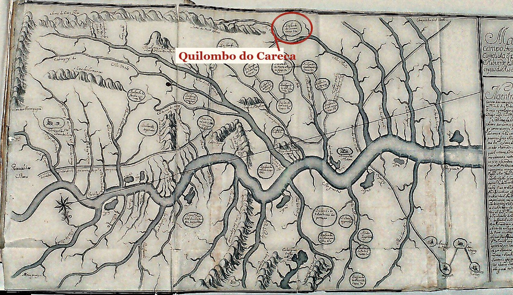
No mapa, o Careca está no alto, num oval com a inscrição "Quilombo do Careca, casas 220", desenhado dentro de uma curva do rio que, mais adiante, parece levar a legenda "Rio Pardo", junto à foz de um pequeno córrego; um caminho o liga aos quilombos da Cala Boca e do Cascalho22.
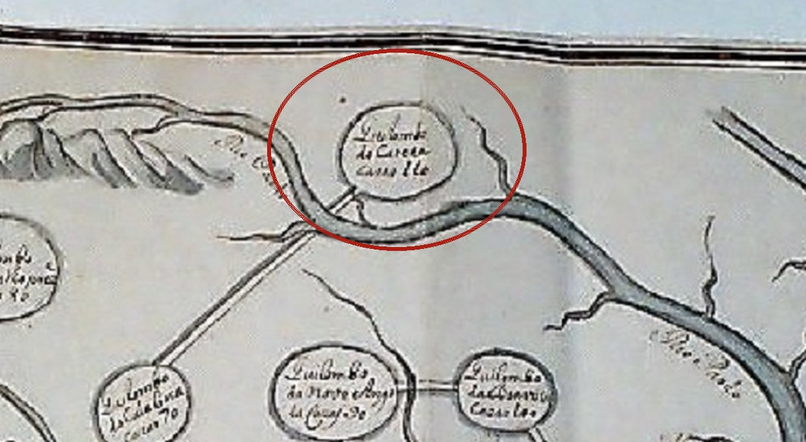
Costuma-se ligar ao Careca também um auto de posse de 1º de novembro de 1759, publicado em 1896 pelo Arquivo do Estado de São Paulo a partir de cópias registradas na secretaria do governo paulista. Segundo o texto, o padre João Corrêa de Melo, capelão da expedição e vigário da vara "das conquistas, e Certão do Campo grande, e Rio grande abayxo, e desde o de agoapé até a barra de Sapucahy", tomou posse "de todas aquellas conquistas, e terras vertentes a ellas" para o Bispado de Mariana e, nos dias seguintes, fez atos paroquiais, "dizendo Missas, e administrando os Sacramentos", diante de Bartolomeu Bueno do Prado, do capitão Francisco Luís de Oliveira e de Marçal de Lemos de Oliveira; o escrivão foi Manuel Carneiro Basto17. Mas, no texto publicado, o lugar não é o Careca: o auto foi lavrado "em o Quilombo do Creça". A versão que circula na internet, que lê "no Quilombo do Careca", não diz de onde foi copiada. O editor de 1896 anotou que o nome Creça não aparecia nos mapas e que todas as localidades daqueles documentos ficavam ao norte do Rio Grande ou entre ele e o Sapucaí; se isso valer também para o Creça, ele ficava em Minas, longe do Rio Pardo17. Pode ser que "Creça" seja uma leitura errada de "Careca", mas só o manuscrito resolveria. Martins, que chama o capelão de "padre preto João Correia de Melo", cita ainda um ato de 28 de outubro em que aparecem o "Careco" e o rio Pardo; esse documento não foi publicado nem localizado18. Por isso, não se pode afirmar que houve missa no Careca.
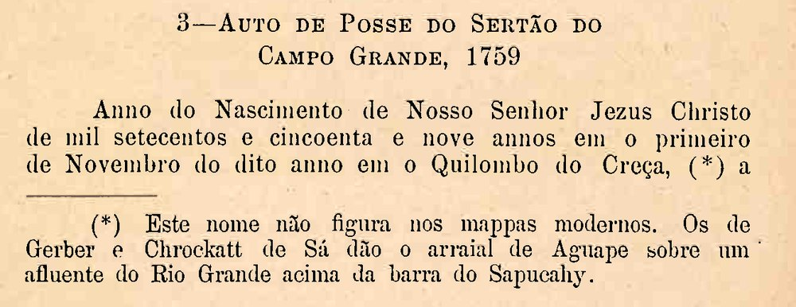
Um estudo do Instituto Federal do Sul de Minas, que comparou os mapas e os livros paroquiais da região entre 1760 e 1824, mostra quão pouco ficou. Na antiga freguesia do Rio Pardo, a de Caconde, os únicos nomes de quilombo encontrados são o "Quilombo do Careca", no mapa, e o "Quilombo das Cabeceiras do Rio Pardo", no requerimento de 1800 de Vicente Ferreira de Paiva Bueno, neto de Bartolomeu, hoje no Arquivo Histórico Ultramarino, em Lisboa; os livros da paróquia não guardaram nenhum outro19.
O requerimento de 1800 era um pedido de recompensa. Vicente pedia ao príncipe regente a promoção a sargento-mor, com soldo, a propriedade do ofício de escrivão das guias da Vila da Campanha, que rendia 300 mil-réis por ano, e o de escrivão dos órfãos para um irmão, alegando que a família estava "em total ruína pelos gastos que seus avós fizeram no serviço do Estado". Para provar os serviços do avô, apresentou testemunhas, que juraram sobre itens redigidos por ele mesmo; quanto maior a conquista, maior o merecimento. Das quinze testemunhas, pelo menos sete repetem, quase com as mesmas palavras, que o quilombo das Cabeceiras do Rio Pardo tinha 197 casas "todas barreadas"; três delas acrescentam "e de beira alta"18. Martins, que transcreveu o documento, aponta nele afirmações falsas: Bartolomeu não pagou a expedição "de sua própria fazenda", como diz o neto; segundo Martins, o governador de Minas forneceu as tropas, as armas, as munições e os mantimentos, com uma contribuição anual das câmaras das vilas. E os próprios funcionários da Coroa desconfiaram: em 1801, uma informação mandada de Vila Rica, a capital de Minas, dizia não conhecer ordem que permitisse a promoção, e uma nota à margem chamou o pedido de "exótico", feito "por alegar serviços dos seus maiores provados somente com uma inquisição de testemunhas"18.
Os dois números do Careca, as 220 casas do mapa e as 197 da petição, vêm portanto do lado que atacou ou de quem queria ser premiado pelo ataque. Ninguém de fora os conferiu. O que se pode dizer com segurança é que, para quem o destruiu, o Careca era um quilombo grande, de cerca de duzentas casas.
O lugar exato ninguém sabe: nenhum documento conhecido o dá, e só a arqueologia poderia confirmá-lo. Mas três tipos de pista apontam para a mesma faixa de terra, entre a cidade de hoje e o Rio Pardo.
A primeira é o caminho. Martins descreve o quilombo atacado na margem esquerda do Rio Pardo, "onde esse rio faz um grande cotovelo à direita, entre dois ribeirotes, ficando nas nascentes do primeiro deles"1. Posta sobre o mapa de hoje, a descrição se encaixa. Descendo de Caconde para São José do Rio Pardo, a curva mais fechada para a direita fica dentro de Divinolândia, perto da divisa com Caconde, onde o rio vira cerca de cem graus; e é bem ali que chegam ao rio, pela margem esquerda, dois córregos lado a lado, um deles o Córrego Fortaleza, que nasce a uns seis quilômetros ao norte da cidade20.
A segunda são os nomes. Perto dali corre o Córrego do Quilombo, que nasce em Divinolândia e desce para o norte, rumo ao Rio Pardo; e a folha topográfica de 1905 marca, a cerca de um quilômetro da cabeceira dele, uma "Faz. Quilombo"2021. Bem na divisa com Caconde, no alto do Morro do Pontal, a 1.277 metros, fica a capela onde se reza, todo 3 de maio, a missa de Santa Cruz, com bases "erguidas sobre pequenos muros de pedras", segundo Marjorie de Faria, que aponta a área como possível local do quilombo. Na pesquisa de 2014 ela diz que a capela fica num bairro chamado Quilombo; na versão revista, de 2019, situa a festa no bairro rural de Vargem Grande, vizinho do bairro do Quilombo12520. Segundo ela, Martins põe o Careca em Divinolândia, "nas proximidades do bairro rural chamado Quilombo"; num mapa feito para a sua dissertação de 2018, ela marca em vermelho essa área provável, junto às antigas fazendas Fortaleza, Jaboticabal, Bocaina e Contendas, aos bairros do Quilombo e de Pirapitinga e ao Pontal; a fazenda Fortaleza tem o mesmo nome do córrego que chega ao Rio Pardo no grande cotovelo. Ela mesma registra que, na pesquisa de campo, não foi possível achar vestígios do quilombo, o que dependeria de arqueologia; a memória dos moradores fala de negros fugidos da escravidão na região do bairro do Quilombo, sem que se possa dizer em que época25.
A terceira é a memória. Segundo Martins, citado pela mesma pesquisa, há perto dali um "cemitério de índio", com uma capela construída para que os plantadores de cebola e de batata não voltassem a arar o terreno, onde se viam crânios e ossos humanos; a pesquisa sugere que ali, "possivelmente sob a capelinha nas nascentes do córrego das Contendas", esteja uma vala comum dos mortos do quilombo1. As nascentes das Contendas ficam a pouco mais de dois quilômetros da cabeceira do Córrego do Quilombo, e a "Faz. Quilombo" de 1905 aparece entre as duas2021.
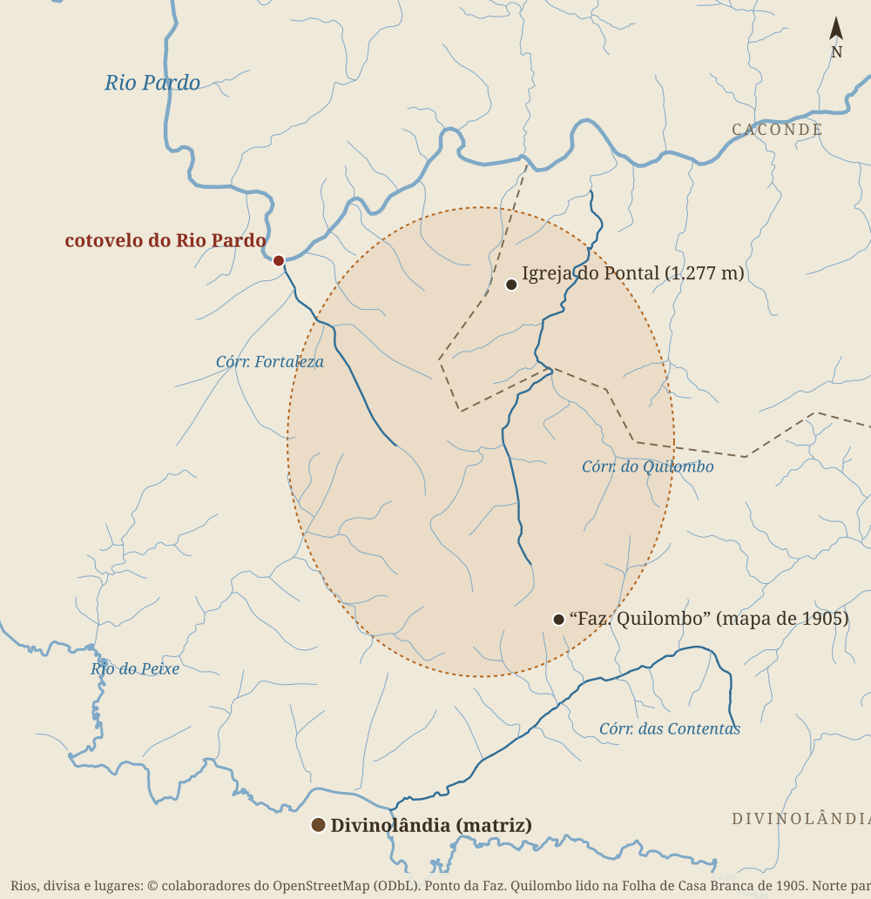
Nada disso é prova. A descrição do caminho é a leitura que Martins faz dos documentos da expedição, e "à direita" pode ter outro sentido no original; nomes como Quilombo podem ter nascido depois; e a memória do "cemitério de índio" nunca foi examinada. Mas as três pistas se juntam numa área de poucos quilômetros, ao norte e a nordeste da cidade, e é por ela que uma pesquisa arqueológica teria de começar.
O que procurar se sabe por um quilombo do Campo Grande que já foi escavado: o do Ambrósio, em Ibiá, Minas Gerais, pesquisado por Carlos Magno Guimarães, da UFMG. Lá, numa área de um hectare e meio cercada em boa parte por um fosso em forma de ferradura, apareceram blocos de barro vermelho das paredes de pau-a-pique, com marcas de dedos, pisos de barro alisado, carvão do incêndio que destruiu o quilombo, cachimbos de cerâmica decorados, favas e parte de uma espiga de milho; não havia telhas, e a cobertura devia ser de folhas de palmeira. Também lá sobreviveram um Córrego do Quilombo e um Morro do Espia, que a tradição oral liga ao quilombo23. As testemunhas de 1800 dizem que as casas das Cabeceiras do Rio Pardo eram "barreadas", e Martins diz que o Careca foi incendiado118. Se for assim, os sinais no chão seriam parecidos: barro queimado e carvão, que um arado ou uma sondagem podem trazer à superfície.
"Campo Grande" não era uma vila nem uma comarca, e não tem nada a ver com a capital de Mato Grosso do Sul. Era o nome que os papéis do século XVIII davam a um sertão enorme e mal conhecido. A historiadora Karen Pessoa Freire o descreve como a zona entre os rios Grande, São Francisco e Paranaíba. Seus limites eram mal definidos, porque os colonos pouco o conheciam, e ele ficava na fronteira entre as capitanias de Goiás, Minas Gerais e São Paulo, fora do controle efetivo de qualquer uma delas29. O título do próprio mapa de 1765 dá a medida: "Mapa de todo o Campo Grande tanto da parte da Conquista, que parte com a Campanha do Rio Verde e S. Paulo, como de Piuí, Cabeceiras do Rio de S. Francisco e Goiases"22. Num estudo de cartografia histórica, pesquisadores da PUC Minas situam essa área, no mapa de hoje, no Triângulo Mineiro, no sul, no sudoeste e no centro-oeste de Minas Gerais e em partes do nordeste de São Paulo2.
Como não havia divisa, a melhor forma de saber que cidades de hoje ficam no antigo Campo Grande é ver onde ficavam os quilombos. Tarcísio José Martins tentou localizar cada um dos 27 núcleos que reconstituiu, e as cidades que ele aponta se espalham do sul de Minas ao Alto Paranaíba e chegam à divisa com São Paulo18:
No sul de Minas, junto do Rio Grande: Carmo da Cachoeira, Nepomuceno, Três Pontas, Campos Gerais, Alterosa, Cristais, onde ele põe a primeira povoação do Ambrósio, e Guapé.
No centro-oeste e no Alto São Francisco: Formiga, Luz, Bambuí, Tapiraí, Medeiros e a região de Santa Rosa da Serra e Campos Altos.
No Alto Paranaíba: Patrocínio, São Gotardo e Ibiá, onde ficava o segundo Quilombo do Ambrósio, o que foi escavado.
No sudoeste de Minas, perto de São Paulo: Alpinópolis, Ibiraci, Cássia, Capetinga, São Sebastião do Paraíso, São Tomás de Aquino, Guaranésia, Guaxupé, Jacuí, São Pedro da União, Monte Santo de Minas, Nova Resende, Muzambinho e Monte Belo.
Em São Paulo: Divinolândia, onde Martins põe o Quilombo do Careca, o maior de todos.
Essa lista não marca fronteiras. Ela só mostra onde havia gente aquilombada, e o sertão em volta, entre um quilombo e outro, também era Campo Grande. Várias das localizações o próprio Martins apresenta como hipóteses, e algumas são discutidas por outros pesquisadores, como a das duas povoações do Ambrósio182. Mas o desenho geral é claro: Divinolândia fica na ponta paulista desse sertão.
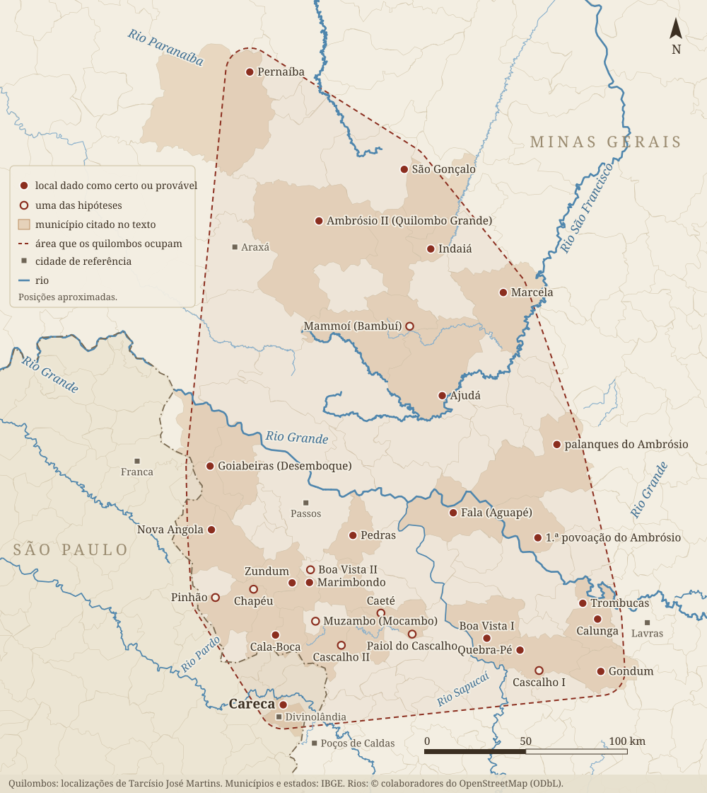
Poucos anos depois do ataque, veio o ouro. Segundo a crônica local de Caconde, em 1765 o capitão Pedro Franco Quaresma explorava ali o ouro, provavelmente como descobridor das minas, e muitos povoadores vieram atrás das minas. Em volta de uma capela de Nossa Senhora da Conceição formou-se uma freguesia, que o IBGE registra como distrito criado em 1775, no termo de Mogi Mirim. O nome Caconde, segundo a mesma fonte, é de origem africana, ligado a uma região de Angola, e teria sido dado pelos quilombolas que viveram ali antes do ouro4.
Os papéis do governo de São Paulo, publicados em 1896, contam a descoberta de perto. Em 20 de agosto de 1765, o sargento Jerônimo Dias Ribeiro, do registro de Itapeva, na estrada de Goiás, avisou de "hum novo descuberto, que se acha nas vertentes, ou cabeceiras do Rio Pardo, que fica na comarca de S. Paulo": o descobridor dizia ter tirado de um buraco "quatro oytavas e meya de ouro bem grosso". Quem correu primeiro foi o lado mineiro: do arraial do Desemboque partiram o comandante, o capitão-mor, o vigário e os mineiros, que, depois de treze dias de viagem, tomaram posse "por parte das Geraes"17. São Paulo respondeu em 2 de outubro, quando o capitão Ignácio da Silva Costa tomou posse do descoberto de Nossa Senhora da Conceição em nome do governador paulista, D. Luís Antônio de Sousa Botelho Mourão, o Morgado de Mateus24. O ouro, desde o começo, parecia pouco: as bateadas de que o sargento soube davam um ou dois vinténs, e o próprio governador escreveu que, pelas notícias, o descoberto seria "de lemitação"17.
Pouco ou muito, o ouro estava numa divisa que ninguém sabia onde passava. Minas dizia que aqueles sertões eram seus: em 1765, o governador mineiro, Luiz Diogo Lobo da Silva, lembrava que o Conde de Bobadela tinha "evacuado dos Negros quilombados" o Campo Grande e os descobertos vizinhos, à custa das comarcas de Minas. São Paulo queria a divisa no Rio Sapucaí e reclamava que o ouro tirado ao sul dele se confundia com as cem arrobas que os mineiros pagavam ao rei todo ano, de modo que o quinto se perdia17. Em 1767, o Morgado de Mateus escrevia que Minas tinha "uzurpado todo o certão" e os seus descobertos, onde se vivia sem justiça, num "Quilombo de criminozos para onde todos se retirão"17.
E havia uma ordem que hoje parece estranha. Quando chegou a São Paulo, o Morgado de Mateus trouxe instruções do rei para não permitir novos descobertos de ouro, e por isso mandou um destacamento de infantaria impedir a mineração do Rio Pardo, "junto da estrada q'. vay desta Capitania para Goyazes"; o rei aprovou e mandou continuar. A tropa ainda estava lá em 1767, mas, segundo o governador, do lado mineiro as diligências continuavam17. Em 1771, quando o governador de Minas, o Conde de Valadares, mandava repartir aquelas terras aos seus, São Paulo mudou de rumo: a câmara da capital pediu que as minas do Rio Pardo e de Jaguari fossem repartidas entre os paulistas, "attendendo a sua pobreza", e em 7 de outubro o governador mandou o coronel Francisco Pinto do Rego ir aos descobertos, repartir as terras minerais e pôr registros nas passagens, tudo "sem violência, ou alteração dos Povos"17. O nome Caconde já aparece em papéis daquele ano17. Em 1775 vieram a freguesia, criada pelo bispo de São Paulo, D. Frei Manuel da Ressurreição, e o Registro de São Mateus, que cobrava as entradas de quem seguia para Minas2417.
Em 1784, o comandante desse registro contava ao governador que chegavam mineiros de fora e se instalavam no Rio Pardo e no ribeirão do Bom Jesus, mas que as lavras eram "de tres athe coatro vinténs", e que os guarda-mores de Minas ainda tentavam dar terras do lado paulista, que ele mandava abandonar17. O comandante se chamava Jerônimo Dias Ribeiro, como o sargento que, vinte anos antes, dera a notícia do descoberto; ao que tudo indica, era o mesmo homem.
O ouro não acabou com os quilombos da região. Em 5 de junho de 1784, o governador de São Paulo, Francisco da Cunha e Menezes, mandou esse mesmo comandante prender "todos os negros de Quilombo". Em 8 de novembro, ele respondeu que não tinha conseguido, "por terem os ditos negros quem os avizace", e que eles andavam "entre esta povoação, e a do Cabo Verde"17. Vinte e cinco anos depois do ataque ao Careca, ainda havia gente aquilombada na região, e alguém que a avisava. A carta não diz quantos eram nem de onde tinham vindo.
O povoado mudou de lugar conforme o ouro aparecia e sumia: das margens do ribeirão São Mateus para o Bom Sucesso e depois para o Bom Jesus. Por volta de 1804 as minas se esgotaram de vez, os moradores foram embora, e o sertão do Rio Pardo ficou de novo quase deserto45.
O vazio durou pouco. A partir de cerca de 1810, famílias vindas de Minas Gerais começaram a se apossar das terras da antiga freguesia, com pedidos de sesmarias e desentendimentos entre os ocupantes5. Caconde foi refundada em 1822, quando Miguel da Silva Teixeira doou um patrimônio para a nova povoação, e a região passou a viver da criação de gado, até o café chegar em meados do século4.
É nesse movimento que aparece o nome do Rio do Peixe, na menção mais antiga encontrada até aqui. Em 1834, Pedro Martins do Amaral e Maria Thereza de Jesus, junto com a família Silva Pereira e Gabriel da Silva Teixeira, doaram terras, parte delas da Fazenda do Rio do Peixe, para formar o patrimônio de uma capela ao Divino Espírito Santo, que ainda não estava construída6. Em 1835, o censo de Caconde já registrava moradores no bairro do Rio do Peixe, entre eles os filhos do capitão Antônio Gomes de Oliveira, vindo de Campo Belo, em Minas7. Em 1841, uma moradora do bairro foi enterrada no cemitério do Espírito Santo8.
O livro de 1991 descreve esse povoamento sem citar documentos. Antes da capela, dizem os autores, a região era coberta de matas, cortadas por caminhos estreitos que levavam a Caconde, por onde se viajava a cavalo, de carabina a tiracolo; os primeiros que ficaram erguiam ranchos e choças, demarcavam terras "que eram de ninguém" e plantavam para comer. Com eles vieram também posseiros que tomavam as propriedades que lhes agradavam, chegando a exterminar famílias inteiras, ou se instalavam pela força das armas, "porque quase ninguém tinha a posse das terras formalizada"28.
Em 1843, o capitão Tomás José de Andrade, outro mineiro, obteve a licença para erguer a capela do Espírito Santo do Rio do Peixe8; o livro de 1991, com base na Memória da Cidade de Caconde, de Adriano Campanhole, o chama de primeiro presidente da Câmara Municipal de Caconde26. Em 1845, a Justiça de Casa Branca deu posse do patrimônio à capela, numa cerimônia descrita como mansa e pacífica, sem oposição de ninguém6. Em 1855, os moradores pediram que a capela tivesse padre próprio: diziam que ela fora erguida havia mais de doze anos e que a população tinha passado de quatrocentas para duas mil almas6.
Os papéis desse processo, guardados no Arquivo da Cúria Metropolitana de São Paulo, foram transcritos numa tese de doutorado de 2022 e contam a obra passo a passo. Em 7 de novembro de 1843, Tomás José de Andrade e os "moradores do Bairro do Rio do Peixe" pediram ao bispo licença para erguer a capela, dizendo que o lugar estava "bastante adiantado em população". A provisão saiu no dia seguinte e mandava fazê-la "em lugar alto, livre de umidades", "com âmbito em volta para poderem andar procissões". Em 27 de março de 1844, o vigário de Caconde informou que a capela-mor já estava "concluída por dentro e por fora, e com altar mor"; do corpo da igreja, havia grande parte do madeiramento pronta. Em junho, o bispado publicou o edital do patrimônio, num terreno na "paragem denominada São Domingos do Rio do Peixe", doado pelos herdeiros de Manoel da Silva Pereira e por Pedro Martins do Amaral, os mesmos nomes da doação de 1834156. Tudo indica que essa capela ficava onde está a matriz de hoje, como se vê no capítulo 11.
Foi nessa época que nasceu o nome que ficaria. Por volta de 1850, havia à margem do Rio do Peixe um rancho onde pernoitavam os tropeiros que iam de Caconde para a vila de Casa Branca. Um incêndio queimou o rancho e as terras em volta; um novo rancho foi erguido, e o lugar passou a ser conhecido como Pouso do Sapecado910. A tradição oral conta o incêndio com um culpado: alguém, um tropeiro, segundo uma das versões, teria esquecido o fogo aceso, e o fogo sapecou o rancho em que ele se abrigava1213. O livro de 1991 conta o rancho e a capela juntos, "contemplando o curso das águas", e chama a causa do incêndio de "ignorada": provavelmente um tição de fogo esquecido num canto do rancho, que o vento atiçou depois da partida dos tropeiros26.
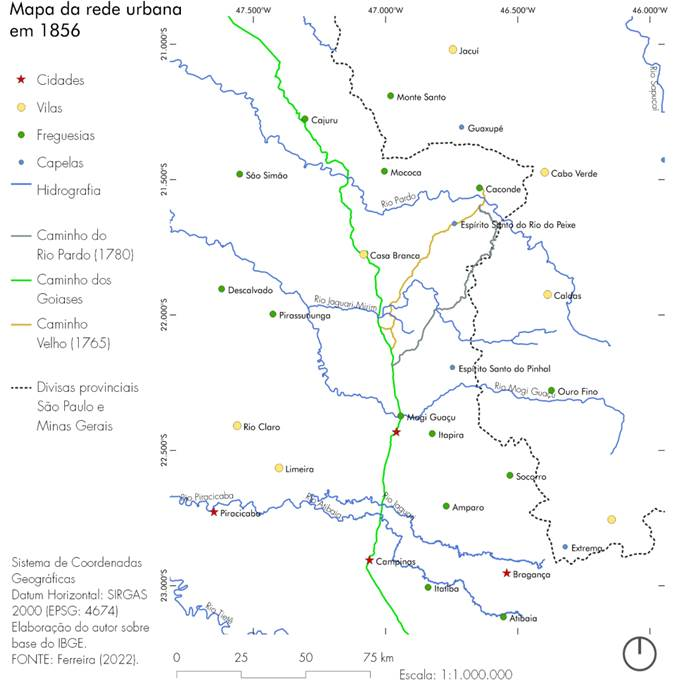
As datas da capela variam conforme a fonte. O livro de 1991, de Válter Roberto Lopes e Orlanda Maria Grespan de Faria, diz que ela foi benta em setembro de 1844 e curada, isto é, ganhou padre próprio, em 25 de janeiro de 1858, por D. Sebastião Pinto do Rego, bispo de São Paulo; o IBGE dá a mesma data e o mesmo bispo269. Mas D. Sebastião só se tornou bispo de São Paulo em 1861; em 1858, o bispo era D. Antônio Joaquim de Melo. A data ou o nome do bispo está errado27. O estudo que leu o processo de 1855 registra a capela curada em 185611, e a genealogia dos Ribeiro da Cunha, que diz citar o livro de 1991, fala em janeiro de 1845, o que o livro não diz14. O livro de 1991 traz ainda um documento que antecipa a vida da capela: entre os papéis do arquivo da casa paroquial, em péssimo estado, que Orlanda restaurou, há um registro de batizado feito nela em 1844 e assinado pelo cura João Domingos Figueira, data que, notam os autores, "parece destoar" da que se conhecia para a fundação26.
O passo seguinte foi a freguesia. Em 27 de janeiro de 1865, o major Antônio Tomás de Andrade e a mulher, Mariana Leopoldina da Costa, doaram terras à Igreja para formar a paróquia; a Lei provincial n.º 25, de 28 de março de 1865, criou a freguesia do Espírito Santo do Rio do Peixe, ligada a Caconde, e em 12 de janeiro de 1866, por provisão do bispo D. Sebastião Pinto do Rego, foi criada a paróquia2669. A genealogia dos Ribeiro da Cunha põe a lei em 28 de fevereiro14. Outra capela veio depois: a de Nossa Senhora do Rosário, fundada em 1879 por Manoel Pereira da Silva, que recebeu em 1881 duas partes de terra doadas por Joaquim Pio de Andrade e a mulher, Francisca Maximiana da Costa. O mesmo Manoel Pereira da Silva doou ao Divino Espírito Santo terras à margem do Rio do Peixe, "vinte e tantos alqueires", como diz a escritura, sem o número exato269. O nome do pouso, Sapecado, só se tornaria oficial em 1938, e o de Divinolândia em 19539.
Não se sabe quem vivia nessas serras antes do século XVIII, nem se há vestígios indígenas no território. A localização e a história do quilombo do Careca dependem de arqueologia e de achar os manuscritos de 1759: o do auto de posse de 1º de novembro, publicado em 1896 com o nome "Creça", e o do ato de 28 de outubro citado por Martins. Também não se encontraram os pedidos de sesmaria das terras do Rio do Peixe nem a escritura original da doação de 1834, que podem estar nos arquivos de Caconde, de Casa Branca e do Estado.
Capítulo 2
Do quilombo do Careca aos colonos do café
Quando os fazendeiros mineiros chegaram ao Rio do Peixe, a terra já tinha uma história de cativeiro e de fuga: segundo os pesquisadores, no século XVIII ali existira o quilombo do Careca, destruído em 1759, como se viu no capítulo anterior12. A escravidão voltaria com as fazendas, e duraria até 1888.
Décadas depois, a região voltou a ser ocupada, agora por fazendeiros. Os dois que aparecem primeiro nos documentos publicados vinham de Minas Gerais4. Um deles foi o capitão Antônio Gomes de Oliveira, que estava em Candeias, perto de Campo Belo, em 1832; em 1835 os filhos dele já aparecem no censo de Caconde, morando no bairro do Rio do Peixe. Em 1856 ele declarou ao governo a fazenda Santo Antônio do Rio do Peixe, com cerca de 1.500 alqueires, comprada3.
Outro foi o capitão Tomás José de Andrade, batizado em 1789 em Carrancas, também em Minas. Ele se casou em 1841, em Caconde, com Antônia, filha do capitão Antônio Gomes, e a partir de 1846 passou a morar no Rio do Peixe. Foi ele quem obteve, em 1843, a licença para erguer a capela do Espírito Santo, em volta da qual nasceria o povoado4. As famílias Andrade, Junqueira, Vilela e Gomes se casavam entre si, e as terras passavam de mão em mão pelas heranças4.
O registro paroquial de terras de 1856 mostra quem declarou terras no lugar; das 271 unidades familiares que os pesquisadores contaram na relação de moradores (descrita logo abaixo), apenas 83 aparecem nele como proprietárias. O capitão Tomás aparece como senhor de grande quantidade de terras, nas fazendas Santo Antônio do Rio do Peixe, Cachoeira do Rio do Peixe, Barra do Rio do Peixe, Limoeiro e Salto. Outros declarantes foram Flávio de Salles e Joaquim Alves Moreira, ligados às fazendas São Miguel, São Gonçalo e Cocais (o texto do registro não deixa claro qual era de quem), este último escrivão, juiz de paz e membro da primeira Câmara Municipal de Caconde, em 1864; Manoel Cardozo da Silva, da Cachoeira do Rio do Peixe e de São Domingos; Joaquim Gomes Nogueira Freire, da Boa Vista; e Manoel Ferreira Pinto, das Três Barras5.
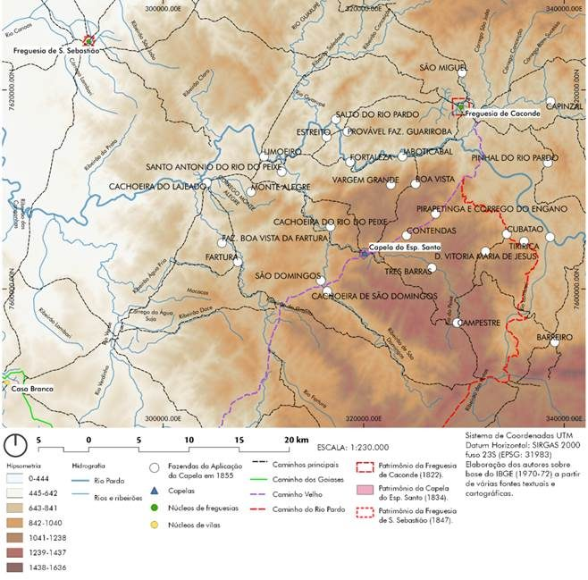
Nessas fazendas trabalhavam pessoas escravizadas, e os números estão nos censos. Em 1850, o recenseamento de Caconde registrou o capitão Tomás José de Andrade com 62 escravizados. Na mesma família, o casal de um dos filhos, José Tomás de Andrade, aparece com 24, e outros casais aparentados, com 15. O capitão Antônio Francisco da Costa, genro do capitão Tomás, aparece com a mulher e 23 escravizados, além de outros 7 da filha dele, Antônia4.
Em 1855, quando os moradores pediram que a capela do Rio do Peixe ganhasse padre próprio, fez-se uma relação dos habitantes da capela (o manuscrito não traz data). Ela lista 2.043 pessoas, em 271 unidades familiares na contagem dos pesquisadores, e não está completa: o próprio cabeçalho cita famílias que ficaram de fora. Das pessoas listadas, 626 eram escravizadas, cerca de 30%: quase uma em cada três. O ofício que acompanha a relação, assinado por Flávio Secundo de Salles e Joaquim Alves Moreira e endereçado ao capitão Tomás José de Andrade, dá outro número: diz que a população "alcançou a 1573", enumera as famílias que faltavam e conta que, com elas, se chegaria aos dois mil; o pesquisador transcreve o ofício e não explica a diferença entre os dois números11. Quatro fazendas tinham cinquenta cativos ou mais cada uma (Pinhal do Rio Pardo, Fartura, Santo Antônio do Rio do Peixe e Limoeiro); nas outras, o número regulava em torno de quinze a vinte, e havia grande quantidade de agregados, gente livre e pobre que vivia em terra alheia510.
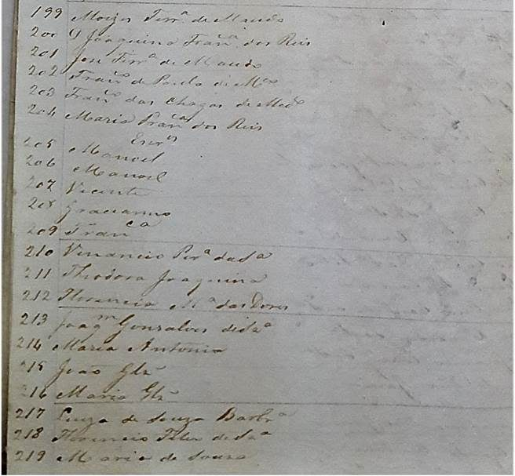
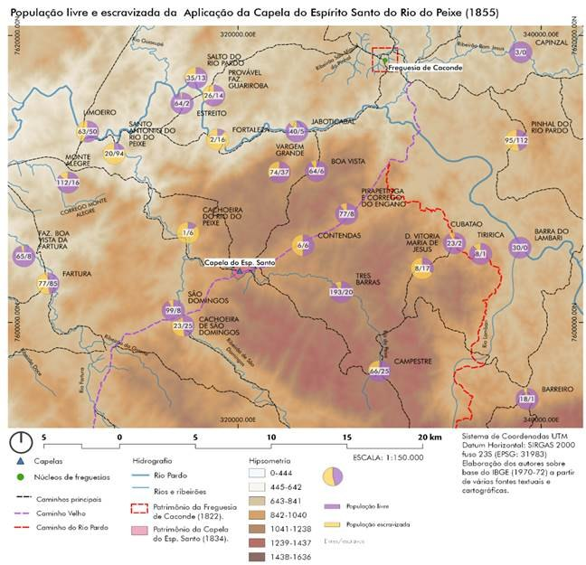
O mesmo pedido descreve o que se produzia: lavoura, criação de gado, cavalos e porcos, fumo, engenhos de açúcar e plantações de café, que, segundo o documento, aumentavam a cada ano5.
Nos inventários, feitos quando um fazendeiro morria, as pessoas escravizadas aparecem arroladas entre os bens. Quando o capitão Antônio Gomes de Oliveira morreu, em 1864, a partilha dos bens nomeou catorze pessoas escravizadas, cada uma com um valor: João, Silvania, Umbelina, Simião, Zacarias, Bernarda, Rita e Pocidonho, avaliados entre 300 mil-réis e um conto e setecentos mil-réis; e Catharina, Marta, Paulo, Joanna, Antonio e Flora, que entram como metades de dote, com partes de 50 a 200 mil-réis3.
Inventários mais antigos mostram o mesmo. O de Maria Flauzina de Andrade, filha do capitão Tomás, aberto em Casa Branca em fevereiro de 1848, arrola 26 escravizados entre o ouro, a prata e as terras do casal, que morava na fazenda das Posses, no bairro das Posses da capela do Espírito Santo. O do capitão Félix José de Noronha Negreiros, dono da fazenda Monte Alegre e de uma casa na capela do Espírito Santo, aberto em 1853, arrola 9 escravizados, 200 pés de café dando fruto e, entre as benfeitorias da fazenda, "senzalas de palha e de telhas"4. Uma fazenda Monte Alegre aparece entre as que a relação de 1855 inclui na aplicação da capela10.
O capitão Tomás José de Andrade morreu em março de 1871, seis meses antes da Lei do Ventre Livre, que declarou livres os filhos de mulheres escravizadas nascidos dali em diante7. No seu inventário foram declaradas 52 pessoas escravizadas, ao lado de terras em sete fazendas e de uma casa no largo da Matriz do Espírito Santo do Rio do Peixe. A lista de benfeitorias registra duas senzalas: uma na fazenda Moreira, ao lado da casa de morada, do paiol, do moinho, do monjolo e de um engenho de serra, e outra na Fazenda do Rio do Peixe, junto a uma casa de morada, um engenho de cana, um engenho de serra, um moinho e um paiol4. Com as "senzalas de palha e de telhas" da fazenda Monte Alegre, em 1853, são das poucas menções diretas, nos documentos publicados, a senzalas na região.
Os documentos guardam com cuidado o nome de cada senhor, de cada fazenda e de cada herdeiro. Das pessoas escravizadas, o que chega até as páginas publicadas é quase sempre o número e o preço. Os poucos nomes publicados, como os catorze da partilha de 1864 e o casal Felipe e Efigênia, do censo de 1850 (capítulo 4), mostram que eles existem nos inventários e nos censos guardados nos arquivos, mas ainda não foram reunidos e contados.
O primeiro recenseamento geral do Brasil, feito em agosto de 1872, publicou um quadro só para a paróquia do Divino Espírito Santo do Rio do Peixe. Das 3.144 pessoas contadas, 619 eram escravizadas: 337 homens e 282 mulheres. O censo as classificou como 394 "pretos" e 225 "pardos"; 463 eram solteiras, 138 casadas e 18 viúvas; todas aparecem como católicas, e só duas, ambas homens, sabiam ler e escrever12.
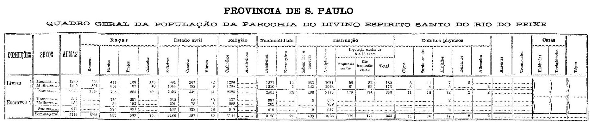
O mesmo censo diz onde elas tinham nascido. Nenhuma era africana. Quinhentas e vinte e seis tinham nascido na própria província de São Paulo, e 93 em outras: 32 no Piauí, 20 em Minas Gerais, 17 no Ceará, 15 no Rio Grande do Sul, 6 em Santa Catarina e 3 em Pernambuco. O censo não diz como nem quando elas chegaram ao Rio do Peixe12. E nenhum bebê aparece como escravizado: as 134 crianças com menos de um ano contadas na paróquia eram todas livres12.
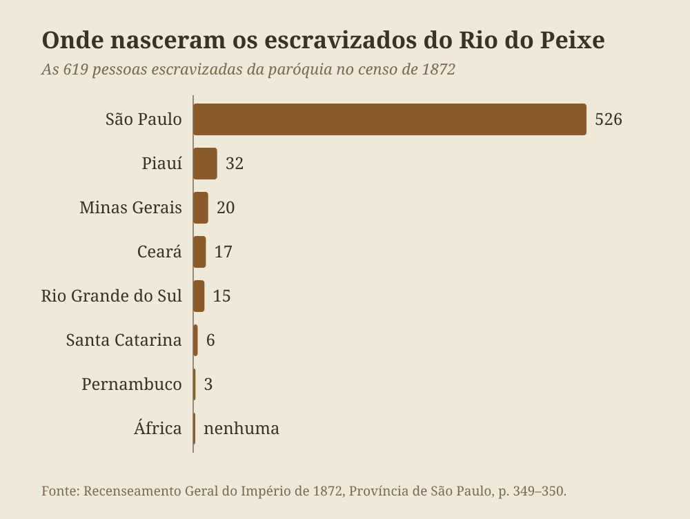
O livro de 1991 traz documentos com nomes de pessoas escravizadas do próprio Rio do Peixe. Segundo os autores, o primeiro registro de batizado de escravizado na freguesia é de 1859: o de Joaquina, filha de Sabina, ambas cativas do capitão Antônio Francisco da Costa. O livro transcreve outro, de 14 de maio de 1865, na "Capella do Espírito Santo do Rio do Peixe": o batismo de Tranquilo, de onze dias, "filho legítimo de Tranqüilo e Anna, escravos", que teve por padrinhos Faustino e Maria, "escravos do Capitão Joaquim Pio de Andrade". Orlanda Maria Grespan de Faria encontrou centenas de registros de batizado de escravizados da freguesia16.
Do livro de escrituras do cartório, os autores copiaram uma venda de 1877. Os herdeiros de Antônia Carolina do Nascimento, moradores do distrito, venderam a Joaquim Bernardes da Costa, de Casa Branca, Luiza, de 38 anos, "solteira, natural de Minas, apta para todo trabalho, cozinheira", matriculada em Casa Branca em 26 de agosto de 1872, por setenta mil-réis, segundo o livro. Na página seguinte, os mesmos vendedores venderam a Lúcio Rabelo de Carvalho uma jovem chamada Maria, de 16 anos, com um filho chamado José. Os vendedores, contam os autores, estavam "oprimidos pelas dívidas contraídas" e lamentaram muito as vendas. A escritura chamava o lugar de "Distrito da Freguesia do Espírito Santo do Rio do Peixe, Comarca da Vila de Caconde"16.
O mesmo capítulo afirma que havia no Rio do Peixe coronéis com mais de cem escravizados e que a família Andrade, "a maior escravocrata do Espírito Santo do Rio do Peixe, chegou a possuir 148 escravos", sem dizer em que ano nem como se chegou ao número; nos documentos lidos até aqui, o capitão Tomás aparece com 62 em 1850 e com 52 no inventário de 1871164. Diz também que os escravizados vinham de Minas, eram matriculados em Casa Branca e depois vendidos aos senhores; o censo de 1872, porém, contou só 20 nascidos em Minas entre os 619 da paróquia1612. E dá a lista dos senhores de escravos da freguesia, que começa por Reginaldo Gomes da Fonseca, o capitão Manoel Antônio Francisco da Costa, Antônio Thomaz de Andrade e D. Maria Custódia Nogueira. O resto do capítulo é uma descrição geral da escravidão no Brasil, com o tronco, as senzalas, a devoção a São Benedito e a Santo Antônio e os batuques chamados caxambus, que os próprios autores apresentam como "provavelmente o cenário do dia-a-dia" da freguesia, e não como algo documentado nela16.
Outras passagens do mesmo livro falam do Rio do Peixe, mas não indicam documento nem testemunho; podem vir da tradição oral ou da pesquisa de Orlanda, e ficam aqui como afirmações dos autores. Segundo eles, o escravizado produzia muito dos 18 aos 30 anos e, depois disso, era considerado velho; muitos "eram eliminados habilidosa e artificiosamente", abandonados na doença e na velhice. Quando um deles tinha doença incurável, o fazendeiro o alforriava e lhe dava um "empurrãozinho", soltando-o no mundo. Os fazendeiros nem sempre assumiam os filhos que tinham com escravizadas e, quando a paternidade virava falatório, os vendiam17.
No capítulo sobre as fazendas do Espírito Santo do Rio do Peixe, os autores contam que os velhos recebiam tarefas que pareciam feitas só para atormentá-los, e que "há casos" de pretos velhos que, depois de comer no cocho, tinham de passar a noite latindo em volta do galinheiro do coronel, para afastar os bichos. Contam também que havia fazendas tão mal administradas que se chegou a trocar fazendas por escravizados. E dizem ter encontrado, em documentos, declarações de estima de fazendeiros pelo escravizado que precisavam vender por dificuldade de dinheiro, como na escritura de 1877; para eles, essas declarações são de perto da abolição, quando ficou difícil repor os cativos, ou de depois dela17.
Sobre o fim do cativeiro, o livro diz que, nas últimas décadas, as revoltas se tornaram comuns, que havia fugas para as matas, onde os fugitivos eram caçados por capitães do mato e por valentões que disputavam prêmios oferecidos pelos fazendeiros, e que alguns se juntavam em quilombos; e que, depois da abolição, os fazendeiros passaram a tratar com respeito os libertos, a batizá-los e a apadrinhá-los, para manter a mão de obra. Nada disso vem com nome, data ou fazenda17.
O próprio livro é um documento do seu tempo. Ao perguntar "Por que o negro não se integrou à nossa sociedade?", os autores condenam a escravidão e o desprezo dos brancos, atribuem a abolição à pressão inglesa, e não à princesa Isabel, mas descrevem os libertos como "cultores do ócio e da irresponsabilidade" e como "uma espécie de ser irracional" depois de três séculos de cativeiro. O capítulo termina lembrando ao leitor branco que, por trás do preconceito, "há muitos brancos bandidos... que podem ser nossos antepassados"17.
Nenhum documento conhecido liga as pessoas escravizadas das fazendas ao quilombo do Careca. Entre o ataque de 1759 e a chegada dos fazendeiros mineiros ao Rio do Peixe, nos anos 1830, passaram-se mais de setenta anos14. Os cativos de 1872 tinham nascido no Brasil, quase todos na própria província; nada nos censos, nos inventários ou nas listas indica que descendessem de quem viveu no quilombo12. E os livros da paróquia de Caconde, como se viu no capítulo 1, não guardaram o nome de nenhum quilombo.
O que liga as duas histórias é a memória, não o papel. Na pesquisa de Marjorie de Faria, a historiadora Orlanda Grespan de Faria conta que a capela do Morro do Pontal "foi feita por escravos" e que a festa de Santa Cruz era mantida pelos negros que moravam ali; com a chegada dos italianos, a festa foi retomada e a capela, reformada. Seu Sebastião Romão, filho e neto de escravizados, lembrou que no Pontal "era tudo preto lá", até que os italianos chegaram, e que a "pretaiada" de outros bairros de Caconde foi embora para São Paulo e para o Rio de Janeiro1. É a pesquisadora quem liga essa devoção ao tempo do quilombo; os documentos não confirmam nem desmentem.
A mesma pesquisa ouviu, anos depois, outras lembranças da saída. A historiadora contou que os netos das famílias negras do lugar foram para a região de Caconde, Guaxupé e Muzambinho, porque "praticamente os italianos dominaram aqui". E descendentes de africanos entrevistados não se lembravam de enfrentamentos com os imigrantes, mas sim de conflitos com fazendeiros que, mesmo depois da abolição, pressionavam os poucos negros que tinham terra15.
Em 1855, o café era uma lavoura entre outras. O livro de 1991 descreve o que veio depois: os fazendeiros derrubavam a mata, cobriam a terra de cafezais até que envelhecessem e então os abandonavam, com a terra rasgada pela erosão e tomada pelas formigas, e seguiam floresta adentro; houve época em que, segundo os autores, não se plantava mais nada além do café, e a comida tinha de vir de fora, a ponto de se importarem víveres dos Estados Unidos. Os autores atribuem a essa lavoura sem adubo nem irrigação, que avançava sobre terras virgens e abandonava as gastas, o desmatamento "de mais de 90% das terras do nosso município"166.
Um ano antes da abolição, a matrícula oficial de 30 de março de 1887 contava 745 pessoas escravizadas no município de Caconde, a que a freguesia do Rio do Peixe pertencia; o levantamento não as separa por freguesia. Eram 395 homens e 350 mulheres; 349 tinham menos de 30 anos; 607 eram solteiras, 97 casadas e 41 viúvas; 733 viviam na zona rural e 12 na urbana13.
A escravidão terminou no Brasil com a Lei Áurea, de 13 de maio de 18887. Na região, houve cidades que se anteciparam: segundo a prefeitura de Espírito Santo do Pinhal, a escravidão acabou ali em 16 de abril de 1888, e dois dias depois homens negros da cidade fundaram a Irmandade de São Benedito8.
Um inventário de depois da abolição mostra uma dessas fazendas. Quando José Tomás de Andrade, filho do capitão, morreu em 1896, o seu inventário arrolou 41.273 pés de café na fazenda da Cachoeira, uma casa com máquina de beneficiar café e três casas de colonos4. Segundo a reportagem que conta a história do café local, a cafeicultura de Divinolândia tomou corpo com imigrantes europeus, em sua maioria italianos, que chegaram entre o fim do século XIX e o começo do XX9. Essa é a história do próximo capítulo.
Falta quase tudo sobre as pessoas escravizadas do Rio do Peixe: os nomes, as famílias, as origens, as fugas, os casamentos registrados na capela, o destino de cada uma depois de 1888. Falta saber onde ficavam as senzalas e o que restou delas. A memória existe: em 2013, seu Sebastião Romão, então com 99 anos, filho e neto de escravizados, contou a uma pesquisadora que o avô nascera na região de Divinolândia e o pai na de Caconde1. Histórias como a dele ainda não foram reunidas. As listas de 1850 e de 1855 e os inventários de Caconde estão nos arquivos e podem ser lidos; ainda não foram contados com os nomes de quem estava neles. Há outros lugares onde procurar: o livro de óbitos da freguesia, de 1847 a 1902, guardado na Cúria Diocesana de São João da Boa Vista4, e os jornais da época, digitalizados pela Biblioteca Nacional, em que a expressão "Espirito Santo do Rio do Peixe" aparece mais de cem vezes só no Correio Paulistano de 1880 a 1888, à espera de quem as leia em busca de fugas, alforrias e da notícia da abolição14.
Capítulo 3
Mascates, colonos e padeiros no Rio do Peixe
No fim do século XIX, a grande imigração europeia chegou a São Paulo. Calcula-se que 1,6 milhão de imigrantes desembarcaram no porto de Santos entre 1887 e 1914, a maioria italianos1. Em Divinolândia, foi com eles que a cafeicultura tomou corpo, entre o fim do século XIX e o começo do XX2.
Segundo a resenha do livro de 1991, os autores lembram a contribuição de portugueses, espanhóis, libaneses e, sobretudo, italianos, e registram que para Divinolândia não teriam vindo imigrantes japoneses3. Das famílias de colonos que trabalharam nas fazendas, quase nada está publicado. As histórias que chegaram até nós são as de quem fez comércio, comprou terra ou deixou descendentes que pesquisaram a própria árvore.
A trajetória mais bem documentada entre as encontradas é a de Angelo Tardelli. Ele nasceu por volta de 1850 em Isola Santa, uma pequena povoação da comuna de Careggine, nas montanhas da Garfagnana, província de Lucca, na Toscana. Chegou ao Brasil no fim da década de 1870 e, com o irmão Lourenço, trabalhou como mascate: comerciante ambulante que percorria cidades, vilas e fazendas levando mercadorias. O circuito deles incluía São João da Boa Vista, Casa Branca, São José do Rio Pardo, São Sebastião da Grama, Caconde e o Espírito Santo do Rio do Peixe, além do sul de Minas1.
Antes de chegar ao Rio do Peixe, Angelo viveu em Campestre, no sul de Minas, em São José do Rio Pardo e na Grama. Em 1881 casou-se com Maria Carolina Ferreira da Silva, de uma família de fazendeiros da região, e em 1886 ajudou a fundar uma sociedade italiana de socorro mútuo. O bisneto que reconstituiu a história observa que era raro, na época, um imigrante recém-chegado casar-se numa família tradicional1.
Por volta de 1892, os Tardelli passaram a morar no Espírito Santo do Rio do Peixe. Em 1894 viviam na Rua do Cemitério, então vizinha à igreja matriz; o cemitério depois mudou de lugar. Angelo foi comerciante e lavrador, plantou café num sítio na Grama, cuja colheita deu como garantia de uma dívida, e entre 1909 e 1913 foi juiz de paz do distrito, cargo que antes fora de José Pedro Becker1. Primos dele, como Battista Tardelli, chegado em 1890, vieram depois e se fixaram nas mesmas cidades, por sugestão ou iniciativa de Angelo1. Com os Tardelli, foi assim: um veio, os parentes seguiram.
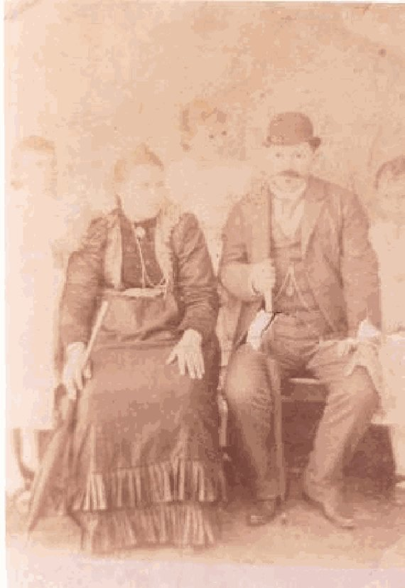
Boa parte do que se sabe dos Tardelli no Rio do Peixe vem de uma pesquisa feita em 1995 por Orlanda Maria Grespan de Faria, a mesma autora do livro de 1991, nos registros de compra e venda de terras e casas da época1. Nesses registros, os sobrenomes estrangeiros são quase todos italianos: Contadini, Corsi, Vannuci, Fornari, Bussio, Zanini, Colombo, Franchi, Bassetti, Farani, Del Ciampo, Amalfi, Mancini, Cervelim, Cimino, Milaneze, Debra, Sevesi, Turri, Bettin, Pasquini e Maffezzoni. Os poucos que não eram italianos incluem Becker, Fromm, Iene e Filloy. Muitos imigrantes portugueses também aparecem, mas os sobrenomes deles se confundem com os dos brasileiros1.
Em 1898, a cunhada de Angelo casou-se no Espírito Santo do Rio do Peixe com outro italiano, Domingos Rancan. E, em 1912, o jornal O Rio Pardo publicou a programação da festa de Santo Antônio no Espírito Santo do Rio do Peixe: a comissão organizadora era formada por José Cervelim, Natal Neri, Oreste Neri e Antonio Ribeiro, e entre as moças das comissões que juntavam prendas havia nomes das famílias Tardelli, Becker, Franchi, Mancini, Amalfi, Fornari, Cervelim e Rosseto1. Vinte anos depois de os Tardelli se mudarem para a vila, os sobrenomes italianos já apareciam entre os que organizavam a festa.
O livro de 1991 chama de primeiro comerciante do lugar Nicolau Vita, e lembra também os negociantes Francisco Viola, João Sales, Ciríaco Ananíades, conhecido como o grego, Viriato Cunha e Miguel Mori3. Os registros do FamilySearch trazem um Nicolau Vita que morreu em Sapecado e que, ao que tudo indica, é o mesmo. Esse Nicolau nasceu em 15 de junho de 1865 em Lagonegro, na Basilicata, e casou-se lá, em 1891, com Maria Felicia Amalfi4, sobrenome que aparece também nos registros de terras do Rio do Peixe. Morreu em Sapecado em 23 de outubro de 1941, aos 76 anos4.
Sem médico, quem precisava de socorro recorria, segundo o mesmo livro, ao único farmacêutico, Mário Ribeiro, ou a um açougueiro chamado Ciríaco Pagano3.
Duas marcas da cidade de hoje nasceram de famílias de imigrantes. A primeira é a batata. Segundo a Associação Brasileira da Batata, foram espanhóis e italianos que a introduziram no município, na década de 1930, em terras de mata derrubada a machado e preparadas com enxadão e arado puxado por boi ou burro. Divinolândia tornou-se importante produtora de batata-semente, vendida para diversas regiões, e ficou conhecida como a capital da batata5. O livro de 1991 destaca a produtividade das famílias Cabrera e Quintana3.
A segunda é o pão. Há mais de um século, uma família da cidade carrega a tradição da panificação, que começou com um bisavô que veio da Itália e abriu uma pequena padaria. Foi o avô, segundo o neto Orfeu, quem inventou o pão de queijo doce que hoje é lembrado como receita de Divinolândia: como a cidade faz divisa com Minas, viajantes pediam pão de queijo, e ele, sem conhecer a receita, testou até chegar a uma versão própria, adoçada6.
Os registros civis e paroquiais reunidos no FamilySearch permitem seguir duas outras famílias italianas da região, ligadas a Divinolândia. Os dois casos mostram também como os nomes mudavam no caminho entre a Itália e o cartório brasileiro.
Os Darcie vieram do Vêneto. Pietro Darcie nasceu por volta de 1853 em Treviso, filho de Giovanni Darsiè e Lucia De Poi, e teve pelo menos nove filhos com Maria Giacomini. Na Itália, o sobrenome do pai e de alguns irmãos dele aparece como Darsiè; nos papéis brasileiros aparece como Darsie, D'Arsie, Darci e, por fim, Darcie. Dois dos filhos, nascidos na Itália, casaram-se em São José do Rio Pardo: Giovanni, nascido em 1879 em Vittorio, na província de Treviso, casou-se em 1901 com Helena Sossai, e teve com ela pelo menos onze filhos; Angelo, nascido em 1881, casou-se em 1902 com Maria Vendramel e morreu em São José do Rio Pardo em 1937. Pietro e Maria morreram em 19207.
A guerra de 1932 deixou um papel com o nome da família. Na ocupação de São José do Rio Pardo, em 8 de setembro de 1932, a casa de Giovanni, registrado também como João Darcie, foi saqueada, e uma lista dos valores desaparecidos foi entregue, provavelmente à polícia. Em 1995, uma neta dele entregou o documento ao escritor Rodolpho Del Guerra; ele ficou arquivado na hemeroteca do Museu Riopardense e foi publicado no livro Riquezas do Baú Provinciano8. Em Divinolândia, quatro ruas levam o nome da família: Guiomar Darcie Fonsato, João Darcie e José Darcie, no Jardim Bela Vista, e Walter Darcie, que atravessa o Jardim Bela Vista e o Residencial Acácia9.
Os Ostorero vieram da Lombardia. Miguel Ostorero nasceu em 1885 em Pinarolo Po, na província de Pavia, filho de Luigi Ostorero e Joanna Bessone, e casou-se com Maria Sala, nascida em 1889. Em 1909 a família já estava na região: a filha mais velha registrada, Joanna, nasceu em 15 de novembro daquele ano na Grama, então distrito de São José do Rio Pardo. Vieram depois Mário, em 1912, Fernandes, em 1916, Olívia, em 1922, Maria, em 1927, e Carlindo, em 1933, este já nascido no distrito que viraria Divinolândia10.
Miguel Ostorero morreu em Divinolândia em 15 de setembro de 1957, aos 72 anos, e foi sepultado na cidade; Maria Sala viveu até 197210. Nos registros, o sobrenome aparece como Ostorero, Ostoero, Ostarero e Ostauro10.
Quase tudo sobre os colonos das fazendas: quem chegou, de que aldeia, em que navio, em que fazenda trabalhou. Os registros da Hospedaria de Imigrantes de São Paulo e os livros de batismo e casamento da paróquia podem responder. Falta também a história dos espanhóis, dos libaneses e dos portugueses, que o livro de 1991 menciona e que não aparecem em nenhuma página aberta. A história das famílias espanholas da cidade, como os Ramírez, também não foi encontrada em nenhuma fonte publicada. Falta, por fim, o nome da família da padaria e do bisavô que a fundou, e se e quando os Darcie passaram a viver no Rio do Peixe.
Capítulo 4
As famílias da política da freguesia
Na segunda metade do século XIX, a freguesia do Espírito Santo do Rio do Peixe era pequena: em 1872 tinha 3.144 moradores, dos quais 2.525 livres e 619 escravizados1. Os registros eleitorais da freguesia mostram, na vida política dela, um pequeno grupo de famílias de fazendeiros ligadas entre si por casamentos: os Ribeiro da Cunha, os Ferreira Pinto, os Ávila Ribeiro e os Thomaz de Andrade1.
O livro de 1991 tem um capítulo chamado "O coronelismo em Divinolândia. As grandes fazendas e o escravismo"2. Lido agora, ele fala quase só da escravidão nas fazendas, assunto do capítulo 2, e pouco do poder dos coronéis: não traz eleições, disputas nem nomes de chefes políticos. Noutro capítulo, o livro publica o retrato de um homem de terno, de pé ao lado de uma coluna, com a legenda "Senhor Luiz Andrade, filho de Joaquim Pio de Andrade. Seus antepassados eram coronéis no Espírito Santo do Rio do Peixe. Possuíam muitos escravos"; a foto não tem data6. O que se sabe dessas famílias vem sobretudo de pesquisas de genealogia, uma delas feita por um descendente, que leu os registros eleitorais da freguesia guardados no Arquivo do Estado1.
Graciano Ribeiro da Cunha foi batizado em 1816 em Baependi, no sul de Minas, e por volta de 1841 deixou a casa do pai e se fixou na região de Caconde, nas terras onde se formaria o Espírito Santo do Rio do Peixe. Por volta de 1845 casou-se com Juventina, filha do capitão Vicente Ferreira Pinto, um dos fazendeiros mais ricos do lugar, dono das fazendas Três Barras, comprada em 1821, e Boa Vista1.
O censo de 1850 registra Graciano como negociante, com quatro escravizados. Desta vez os nomes ficaram registrados: Felipe, de 34 anos, e Efigênia, de 25, anotados como bantos e crioulos, e dois filhos deles, bebês de um e dois anos1. Graciano viveu no Rio do Peixe até morrer, em 1898, e em 1875 exercia as funções de subdelegado1.
Nos registros eleitorais das décadas de 1870 e 1880, os nomes que se repetem são os do mesmo tronco familiar. O que mais aparece é o do filho de Graciano, José Leopoldino Ribeiro da Cunha, nascido por volta de 1848, político do Partido Conservador no Império, que passou para o Partido Republicano Paulista depois de 1889. Ao lado dele aparecem o irmão Gabriel, o primo Vicente Ferreira Pinto Júnior e os cunhados Francisco de Ávila Ribeiro, o Chico Carolino, do Partido Liberal, e Luiz Thomaz de Andrade1.
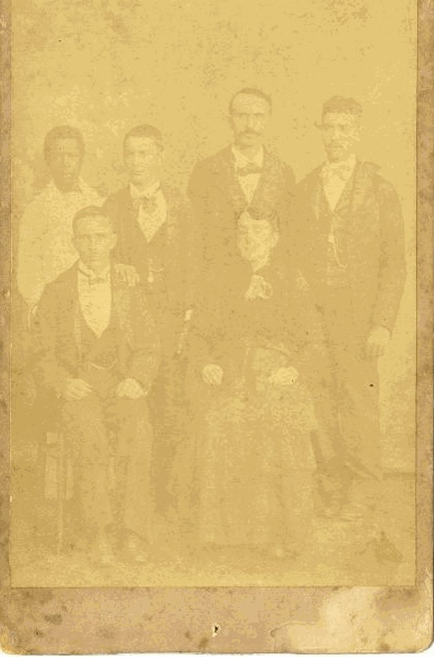
Em 1884, Luiz Thomaz de Andrade, então com trinta anos, casado, lavrador e morador do Espírito Santo do Rio do Peixe, foi proposto para tenente da Guarda Nacional3. As genealogias o chamam, mais tarde, de coronel1.
O livro de escrituras do Espírito Santo do Rio do Peixe de 1883 foi aberto pelo coronel José Leopoldino, e em 1890 a compra de uma casa na Grama por Angelo Tardelli foi escriturada na própria residência dele, que, ao que tudo indica, emprestou ao amigo o dinheiro do negócio4. O cargo de juiz de paz do distrito foi de José Pedro Becker e, entre 1909 e 1913, do próprio Angelo Tardelli, italiano casado numa família tradicional4.
Na última década do século XIX, ramos dessas famílias mudaram-se para a vizinha São José do Rio Pardo, fundada em 1865 por fazendeiros do sul de Minas14. Em 1898, o próprio distrito do Espírito Santo do Rio do Peixe passou de Caconde para o município de São José do Rio Pardo5. Em 1900, Luiz Thomaz de Andrade, filho do capitão Tomás, foi o intendente de São José, eleito em janeiro e com renúncia em agosto daquele ano3, e o coronel José Leopoldino presidiu a Câmara de lá entre 1907 e 1913. Quando ele morreu, em 1918, o jornal O Estado de S. Paulo o descreveu como chefe político de grande prestígio. Segundo o genealogista, a influência política dele foi grande também no Rio do Peixe, onde viveu até a idade adulta, e uma rua da cidade tem hoje o seu nome1.
Falta o que nenhuma fonte encontrada conta sobre o coronelismo no lugar, nem mesmo o livro de 1991: as disputas, as eleições e o modo como esse poder era exercido. Falta também a política da vila entre 1900 e 1930, quando ela já era um distrito de São José do Rio Pardo, e os nomes dos subprefeitos e juízes de paz desse período.
Capítulo 5
Caminhos, comércio, festa e futebol
O livro de 1991 dedica à vida da vila no começo do século XX uma série de capítulos curtos, quase um inventário das primeiras coisas: o primeiro automóvel, o primeiro gramofone e o primeiro rádio, o primeiro cinema, o primeiro cemitério, a banda, o futebol, a escola, a varíola, os dentistas1. O texto desses capítulos não está disponível, mas a resenha da obra e outras fontes permitem reconstituir parte daquela vida.
Segundo a resenha do livro de 1991, os caminhos e as estradas eram ruins, e as cargas andavam em carros de boi, com os seus sons característicos. O correio chegava a cavalo: o encarregado das malas postais, Júlio Honorato, fazia quinze viagens por mês. Ele foi também o motorista do primeiro ônibus, que ligava Sapecado a Poços de Caldas e tinha de atravessar vinte e duas porteiras no caminho; os passageiros se revezavam para abrir e fechar cada uma. Outras linhas iam para Caconde e São José do Rio Pardo. O primeiro caminhão do lugar foi de Sebastião Datovo e Oliveira Emboava2.
Desde 1935, segundo a Gazeta do Rio Pardo, o redator do Resenha pedia aos poderes públicos meios de fácil comunicação entre a vila e a sede do município e com Poços de Caldas, e um texto da Folha da Manhã, que o artigo sobre o sanatório data de 1936, descrevia Sapecado como uma vila "distante 20 minutos de automóvel", com água excelente e bom serviço de luz e força3. Mais tarde, numa visita ao sanatório quando o Cine-Teatro, iniciado em 1947, estava em obras, o governador Adhemar de Barros lamentou o estado intransitável da estrada e prometeu a rodovia São José – Sapecado – Poços de Caldas3.
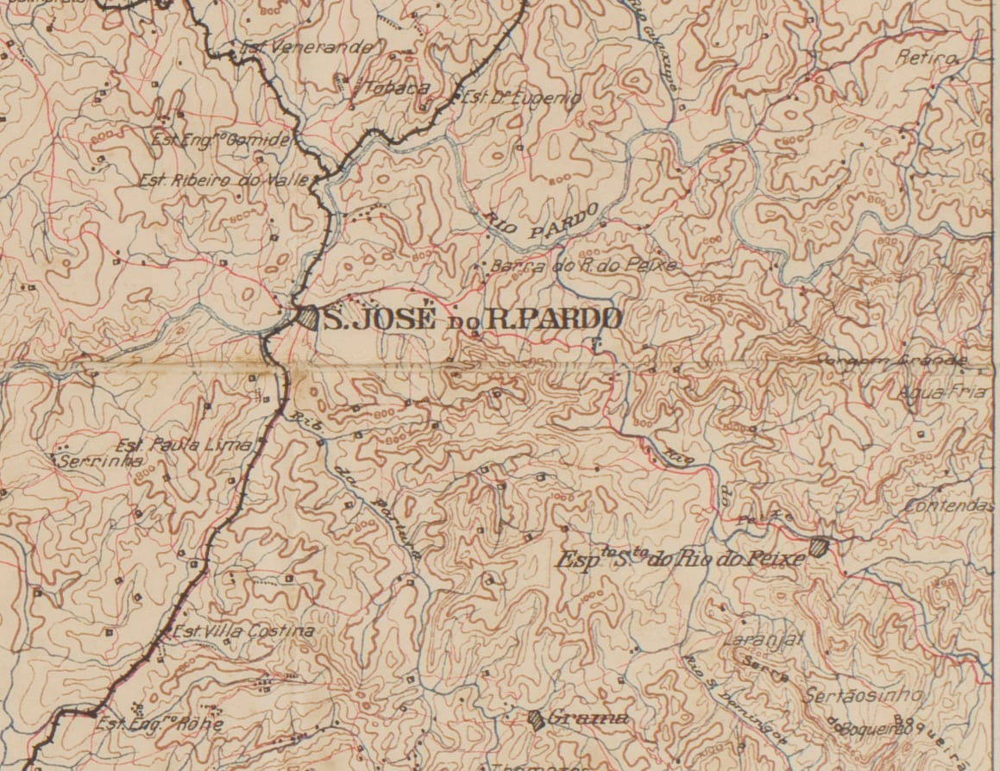
Segundo o livro de 1991, o café ocupava tanta terra que quase não sobrava chão para a comida, que vinha de fora: gêneros chegavam da Argentina, e o arroz, do Japão. O primeiro comerciante foi Nicolau Vita, e o capítulo 3 conta quem veio depois dele2. Não havia médico: quem adoecia procurava o único farmacêutico, Mário Ribeiro, ou o açougueiro Ciríaco Pagano; os dentistas eram práticos, e as crianças nasciam pelas mãos de parteiras2.
Em 1894 a família Tardelli morava na Rua do Cemitério, então vizinha da matriz; o cemitério depois foi transferido para o lugar onde está hoje4. Em 1912, o jornal O Rio Pardo publicou a programação da festa de Santo Antônio no Espírito Santo do Rio do Peixe, de 12 a 16 de junho, organizada por uma comissão de moradores, com três comissões de moças das famílias da vila encarregadas de juntar prendas4.
Um morador que nasceu num sítio a pouco mais de dois quilômetros da cidade, à beira da estrada de Caconde, dois anos antes da emancipação, deixou memórias da infância por lá. O pai trabalhava na roça, capinando café, feijão e milho; a mãe criava frangos, fazia queijos para vender na cidade e era costureira, com freguesas das vilas e fazendas, e chamada também às casas dos "turcos", os comerciantes ricos das cidadezinhas da região. A água vinha de uma mina perto das araucárias, a irmã nasceu em casa pelas mãos de uma parteira, e a família ia de jardineira de Divinolândia a Poços de Caldas, onde a mãe vendia frangos no mercado67.
Uma descrição do município de São José do Rio Pardo do fim dos anos 1940, com dados de 1948 e 1949, reproduzida pelo site Migalhas, dá um retrato da vila de Sapecado: a igreja matriz do Espírito Santo e quinze capelas na cidade e no campo, o Hotel Central, duas farmácias, a Internacional e a "Santo Rosa", como está grafada, um matadouro, um cemitério, uma agência de correio e dois clubes de futebol, a Sociedade Esportiva Sapecadense e o Paulista Futebol Clube5. Havia também, desde 1945, o grande sanatório, com o seu cine-teatro projetado em 1947, que o capítulo 8 conta.
Quase todos os primeiros: o ano e o dono do primeiro automóvel e do primeiro rádio, o nome e o lugar do primeiro cinema da vila, a história da banda, das Escolas Reunidas e do futebol, e o que foi a epidemia de varíola que o livro de 1991 menciona. Esses capítulos existem no livro; o texto, não. O que se achou sobre a escola em outras fontes está no capítulo seguinte.
Capítulo 6
Da cadeira de 1865 ao ginásio de 1963
A capela do Espírito Santo do Rio do Peixe virou freguesia em 28 de março de 18651. Menos de um mês depois, em 26 de abril, uma lei provincial criou ali uma cadeira de primeiras letras para meninos; a mesma lei criou outra, para meninas, na vila de Caconde2. É a escola pública mais antiga do lugar encontrada nas leis da província. A lei não diz quem foi o professor, nem onde as aulas eram dadas, e essas respostas ainda não foram encontradas.
Sete anos depois, o recenseamento geral do Império contou a instrução da freguesia. Das 2.525 pessoas livres, 406 sabiam ler e escrever, 263 homens e 143 mulheres; entre as 619 escravizadas, só duas. Somadas, eram 408 em 3.144 moradores, perto de uma pessoa em cada oito3. O mesmo quadro conta a população em idade escolar, de 6 a 15 anos, só entre os livres: das 353 crianças, 179 frequentavam escola (98 meninos e 81 meninas), e 174 não frequentavam3. O censo não diz onde estudavam as meninas: entre as leis encontradas, a primeira cadeira para o sexo feminino na freguesia veio depois do censo, em 3 de abril de 18734.
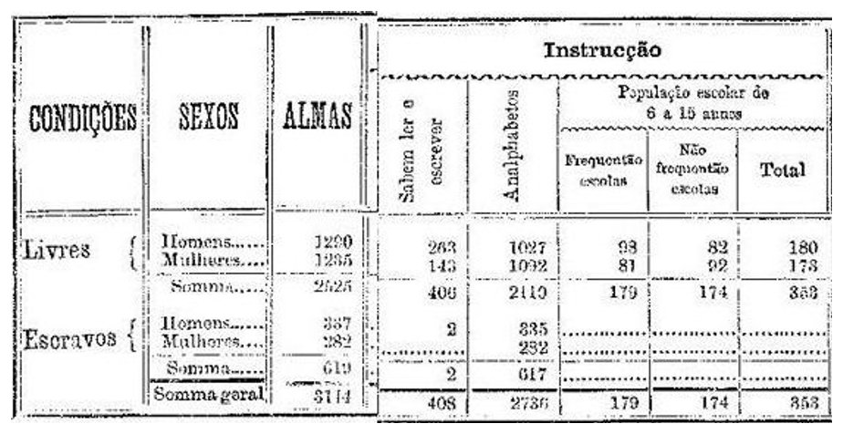
Em 17 de março de 1882, outra lei provincial criou de novo uma cadeira de primeiras letras para meninas na freguesia do Espírito Santo do Rio do Peixe5. A lei não explica se a de 1873 tinha sido extinta ou se era uma segunda escola.
As leis do Estado distinguiam as escolas pelo tamanho. Pelo regulamento do ensino paulista de 1926, um grupo escolar só podia ser instalado onde houvesse pelo menos 300 crianças em idade de matrícula num raio de dois quilômetros, e precisava ter ao menos oito classes; as escolas reunidas pediam 120 crianças e três classes6. O livro de 1991 trata da escola do lugar num capítulo de duas páginas, "A educação no princípio do século XX", e, segundo a resenha da obra, dá destaque às Escolas Reunidas7. O texto desse capítulo não está disponível, e as datas em que o distrito ganhou escolas reunidas e grupo escolar continuam sem fonte.
O que se sabe com certeza é que, em janeiro de 1947, o distrito já tinha um grupo escolar. Um decreto estadual de 15 de janeiro daquele ano deu nome a dezenas de grupos escolares do Estado, e o "Grupo Escolar de Sapecado, em São José do Rio Pardo" passou a se chamar Grupo Escolar "Euclides da Cunha". A justificativa do decreto diz que a homenagem ao autor de Os Sertões, cuja vida se prendeu a São José do Rio Pardo, "se impõe por si mesma"8.
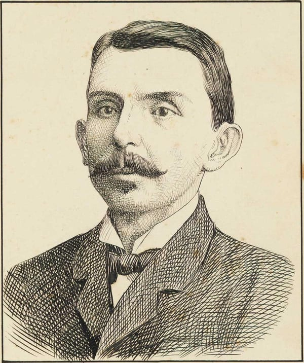
Segundo o histórico da escola estadual de Divinolândia, o grupo funcionava num prédio da Praça da Independência, a praça da matriz, n.º 148, em frente à igreja, e só depois passou a ocupar prédio próprio9. Em 16 de agosto de 1957, uma lei estadual autorizou o Estado a receber em doação, na Rua do Asilo, os terrenos para esse prédio, como conta o capítulo 1010.
O grupo escolar dava o curso primário; o passo seguinte era o ginásio, e Divinolândia não tinha um. Em 1960, a Assembleia Legislativa aprovou duas vezes um projeto de lei que criava um ginásio estadual em Divinolândia, e o governador Carvalho Pinto vetou. A história foi contada no Divinolândia – Jornal, que o padre Ladislau Rodrigues Pinto dirigia, e transcrita décadas depois pela professora Orlanda Grespan de Faria9.
Na madrugada de 26 de abril de 1960, uma caravana saiu da cidade num ônibus posto à disposição pelo deputado estadual Eduardo Vicente Nasser, de São José do Rio Pardo: o prefeito Alcindo Cardoso de Paiva, oito vereadores, o padre Ladislau, o médico Ângelo Elizeu Franchi, diretor do sanatório, o gerente do banco, o da Caixa Econômica e o da companhia de luz, comerciantes, um fazendeiro e um fotógrafo. No palácio, o governador não os recebeu; falaram com um representante dele, a quem o deputado pediu um estabelecimento secundário "para tranqüilidade de dezenas de famílias", ouviram promessas de apoio e chegaram de volta às quatro horas da madrugada do dia 27. O jornal deu a notícia com uma manchete de luto: "O governador estrangula uma justa aspiração"9.
O veto caiu na própria Assembleia. Em 18 de maio de 1960, a Lei n.º 5.677, de um artigo só ("Fica criado um Ginásio Estadual em Divinolândia"), foi promulgada pelo presidente da Assembleia, Roberto Costa de Abreu Sodré, e não pelo governador11. Segundo o jornal, a notícia foi celebrada com fogos, e o chefe da Casa Civil telegrafou ao prefeito dizendo que o governador, examinando melhor as razões do município, tinha resolvido deixar que o projeto se convertesse em lei9.
Eduardo Vicente Nasser não viu o ginásio funcionar. Nascido em São José do Rio Pardo em 1911, empresário e quatro vezes vereador, eleito deputado estadual em 1958, morreu em 21 de agosto de 1960; o jornal de Divinolândia pediu, ao noticiar a morte, que o nome dele fosse posto na fachada do novo ginásio9. Foi o que aconteceu: em 1963, um decreto estadual já distribuía cargos de professor de Português e de Matemática ao Ginásio Estadual "Deputado Eduardo Vicente Nasser", de Divinolândia12.
Criado por lei, o ginásio ainda precisava ser instalado. A instalação foi publicada em agosto de 1962, e no dia 6 daquele mês, perante o professor Willy Apparecido Cônsolo, responsável pela direção, foram admitidas duas professoras para o curso preparatório para o exame de admissão, Celina Theresa Bertocco de Paiva e Maria José Machado Zanetti9. O jornal desconfiou da pressa: a promessa de instalar o ginásio tinha vindo às vésperas das eleições, depois de anos em que a Secretaria da Educação dizia que a cidade não cumpria os requisitos9.
Em março de 1963, o ginásio começou a funcionar com quatro classes, no prédio antigo do grupo escolar, em frente à matriz; o prefeito recém-empossado, o próprio padre Ladislau, mandou fazer as salas novas sem as quais o ginásio não podia funcionar. O curso colegial começou em 1971, e em 27 de fevereiro de 1972 o Estado entregou o prédio novo, onde a escola está até hoje. A partir de 1976 ela passou a receber também os alunos das primeiras séries; em 1978 formou a primeira turma de técnicos em contabilidade, e em 1980 abriu o curso de Magistério, o antigo normal9. É a Escola Estadual Deputado Eduardo Vicente Nasser, na Rua Leonor Mendes de Barros, 309, no Centro13.
Quando o IBGE descreveu o novo município, em 1957, registrou que 64% da população presente de cinco anos ou mais sabia ler e escrever14. Em 1872, o censo contara uma pessoa alfabetizada em cada oito moradores; as duas contas não usam a mesma base, mas a distância entre elas mostra o caminho percorrido entre a cadeira de 1865 e o ginásio de 1963.
Os nomes dos primeiros professores e professoras e o lugar onde davam aula; quando as escolas isoladas viraram escolas reunidas e quando estas viraram o grupo escolar; as escolas dos bairros rurais; e o que o livro de 1991 conta no capítulo "A educação no princípio do século XX". Os jornais da região, na Hemeroteca Digital da Biblioteca Nacional, devem guardar parte dessas respostas.
Capítulo 7
Sapecado na Revolução de 1932
Em julho de 1932, o lugar que hoje se chama Divinolândia ainda não era município. Era um distrito pequeno, no alto da serra, colado à divisa com Minas Gerais. Nos papéis oficiais o nome era Espírito Santo do Rio do Peixe; o nome Sapecado só seria oficial em 1938, e o de Divinolândia em 1953, quando o distrito se emancipou1. Mas o lugar já era conhecido como Sapecado, por causa do rancho de tropeiros que pegou fogo às margens do Rio do Peixe, por volta de 18502. É com esse nome que ele aparece nos relatos da guerra.
Desde 1898 o distrito pertencia ao município de São José do Rio Pardo, embora o histórico do IBGE ainda o liste ligado a Caconde nas divisões de 1911 e 19371.
No dia 9 de julho de 1932, São Paulo pegou em armas contra o Governo Provisório de Getúlio Vargas. Os paulistas exigiam o fim da ditadura do Governo Provisório, uma nova Constituição e a autonomia do Estado. Era o movimento que ficou conhecido como Revolução Constitucionalista. Esperava-se que Minas Gerais e o Rio Grande do Sul se juntassem a São Paulo; não se juntaram. Minas ficou ao lado de Vargas, e a sua Força Pública passou a lutar contra os paulistas na divisa entre os dois estados3.
Com isso, a divisa com Minas virou uma das frentes de batalha. Na região que vai de Mococa a Espírito Santo do Pinhal, as cidades da Mogiana guardam até hoje as marcas daquele inverno. Mococa ficou na chamada Frente Leste, teve combates e perdeu três combatentes, lembrados por um monumento na praça 9 de Julho. Em Águas da Prata houve combate, e as trincheiras, segundo a prefeitura, continuam nos morros. A estação de Casa Branca serviu de base para as tropas do governo federal4.
O livro Divinolândia... Nos Caminhos do Tempo, escrito em 1991 por Válter Roberto Lopes e Orlanda Maria Grespan de Faria, dedica um capítulo a esse período. Segundo a resenha da obra, os autores contam que, por estar na divisa com Minas, o lugar se transformou num campo de guerra, e que muitos episódios daqueles meses são lembrados até hoje pela população5. O livro não está disponível na internet. Este capítulo tenta reconstruir, com o que está publicado, o que aconteceu em volta de Sapecado.
Na Mogiana lutou o 1.º Batalhão da Milícia Civil, formado por voluntários, muitos deles estudantes, sob o comando de um oficial da Força Pública paulista chamado Romão Gomes; o batalhão ficou conhecido pelo nome dele e teve a sua sede em Águas da Prata. Mais tarde, Romão Gomes assumiria o comando de todo o setor67.
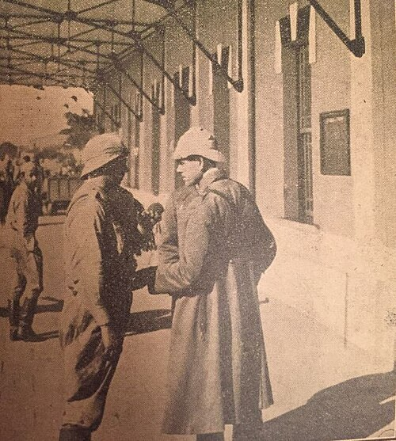
Um desses voluntários, Hermann Moraes Barros, deixou um relato da campanha, publicado em 1984 na revista do Instituto Histórico e Geográfico de São Paulo. Ele conta que o batalhão estreou do lado mineiro da divisa, em Guaxupé. Atacados de manhã cedo numa posição chamada Manoel Joaquim, os paulistas resistiram; à noite veio a notícia de um acordo, a devolução de seis paulistas que os mineiros tinham feito prisioneiros e a ordem de deixar Guaxupé. O batalhão seguiu então por São José do Rio Pardo até São João da Boa Vista, e dali ocupou a frente de Águas da Prata, onde houve tempo para melhorar as trincheiras8.
Depois de muitos dias de espera, veio o ataque. Segundo Hermann, forças mais numerosas e mais bem armadas, entre elas o 5.º Batalhão de Belo Horizonte, investiram contra as linhas paulistas por mais de uma semana, sem conseguir atravessá-las. O que obrigou o recuo foi a queda de Espírito Santo do Pinhal, à direita, sob outro comando. O batalhão recuou às pressas até Casa Branca, onde Romão Gomes, promovido a major dias antes, assumiu o comando de todo o setor e deixou um posto avançado em Lagoa8.
É nesse momento que Sapecado aparece no relato. Com a retirada, uma série de lugares da região precisava ser retomada. Hermann lista o que era preciso retomar: as áreas de São José do Rio Pardo, Grama, Sapecado, Caconde, Itaiquara e Vargem Grande "e mais algumas estações abandonadas ao inimigo sem combate"9.
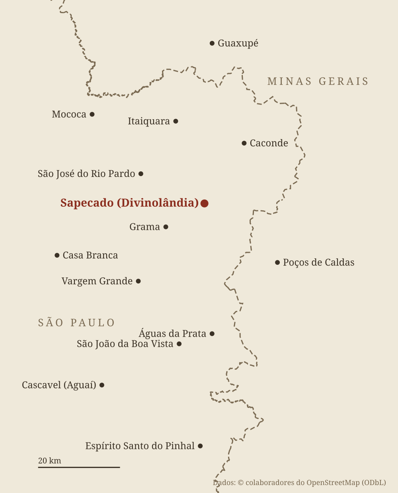
Para retomar o setor, Romão Gomes promoveu a capitão um rapaz de vinte anos, o segundo-tenente Herbert Levy, e pôs à disposição dele cerca de dez soldados do batalhão, promovidos ali mesmo a segundos-tenentes. Com o subcomandante, capitão Homero da Silveira, e outros oficiais, eles retomaram todo o setor, até São João da Boa Vista e Águas da Prata. Segundo o relato, a ação rendeu numerosos prisioneiros, inclusive oficiais, além de metralhadoras, muita munição e alguns fuzis-metralhadores da fábrica Skoda, "recém-importados pela ditadura"9.
Um outro texto, sobre Caconde em 1932, menciona alguém ligado a "Sapecado", assim, entre aspas, que mais tarde caiu prisioneiro "dos ditatoriais"10. O documento, publicado na internet, só pôde ser lido no trecho que os buscadores mostram, e o trecho não deixa claro se a palavra indica o lugar de onde a pessoa vinha ou um apelido; quem era e como foi preso ainda precisam ser conferidos.
Uma menção a forças ligadas ao distrito está na história de Maria Sguassábia, uma professora rural ligada a São João da Boa Vista que, recusada no alistamento por ser mulher, acabou incorporada, com o nome de Mário Sguassábia, na 4.ª Companhia do mesmo 1.º Batalhão. Sua trajetória foi reconstituída a partir do relatório do tenente Mário dos Santos Meira, de 1935, e de outras fontes reunidas pelo projeto Mulheres de São João11.
Segundo esse relato, depois de tomar Vargem Grande numa marcha noturna, com cerca de cem soldados presos, a tropa avançou sobre São Sebastião da Grama. Ali, as forças do governo resistiam ao ataque das "forças de São José do Rio Pardo e Divinolândia (Sapecado)". Centenas de soldados seguiram de trem e outros tantos de caminhão. Em quatro dias, a 4.ª Companhia travou dez combates11. É a menção mais direta, entre as publicadas, a forças paulistas ligadas a Sapecado. O texto não esclarece se eram homens do distrito ou tropas que atacavam a partir dele.
Há pelo menos um combatente com nome nascido no distrito. Aguinaldo Ribeiro da Cunha nasceu no Espírito Santo do Rio do Peixe em 8 de setembro de 1912, neto de Angelo Tardelli, o mascate do capítulo 3, e mudou-se ainda menino para São José do Rio Pardo. Em 1932, aos dezenove anos, alistou-se no Batalhão Romão Gomes, o mesmo de Herbert Levy e de Hermann de Moraes Barros, de quem ficou amigo pela vida toda. Quem conta é o filho dele, o genealogista Aguinaldo Ribeiro da Cunha Filho6.
Na terceira semana de setembro, a resistência paulista ruiu em Eleutério e em outros pontos, deixando Campinas em situação precária. Hermann conta que Romão Gomes propôs atacar o flanco das tropas do governo com a sua coluna, então com cerca de dois mil e quinhentos homens, e que a proposta foi recusada pelo comandante da Força Pública, que já tinha pedido o armistício12.
Na noite de 30 de setembro, com o armistício já acertado, a coluna seguiu para Campinas. Para não entregar as armas, o 1.º Batalhão da Milícia Civil pediu e obteve de Romão Gomes autorização para seguir de trem para São Paulo; partiu contra a vontade do oficial getulista que já comandava a estação, sem licença do tráfego, desceu na porteira da Barra Funda e se dispersou12. O conflito terminou com a rendição paulista, em 2 de outubro3. Maria Sguassábia voltou a pé de Campinas para São João da Boa Vista, cerca de 150 quilômetros11.
A ocupação também deixou prejuízo nas casas. Em São José do Rio Pardo, muitos moradores se queixaram de saques e vandalismo durante a ocupação, e o jornal Gazeta comentou que também no Rio do Peixe houve muitos saques15. Um desses casos, o da casa da família Darcie, está contado no capítulo 3.
A guerra deixou mais do que lembranças. Na Rua Pio de Andrade, em Divinolândia, um funcionário que trabalhava com uma máquina notou um objeto metálico estranho e deu o alarme. Era, segundo a publicação, um morteiro da Revolução de 1932, que o GATE detonou13.
No 9 de julho de 2026, uma publicação sobre a cidade disse que Sapecado esteve no centro dos confrontos e que muitos dos que lutaram nunca voltaram para casa14. É a memória que ficou, mas quase sem nomes.
As fontes publicadas contam a guerra em volta de Sapecado, mas quase nunca dentro dele. Não se encontraram as datas exatas em que o distrito foi ocupado e retomado, quantos moradores pegaram em armas, os nomes de quem morreu, nem o lugar das trincheiras que eventualmente tenham sido cavadas nos morros da cidade. Os episódios que o livro de 1991 diz que a população ainda lembra também não estão em nenhuma página aberta.
Quem tiver em casa fotografias, cartas, documentos ou histórias contadas pelos avós sobre 1932 em Sapecado tem nas mãos justamente o que falta a este capítulo.
Capítulo 8
O sanatório de Sapecado e o Hospital Regional
Nos anos 1930, Sapecado era, nas palavras de um jornal da capital, uma vila decadente na fronteira com Minas, "distante 20 minutos de automóvel", com água excelente e bom serviço de luz1. Tinha, porém, uma fama que corria a região: a de um clima que curava. Médicos de São José do Rio Pardo e de Ribeirão Preto mandavam doentes de tuberculose passar temporadas na vila e um deles, de Ribeirão Preto, registrou a cessação da tosse e o aumento do apetite e do peso1.
A tuberculose era a "peste branca", e o mesmo jornal lembrava que, segundo a teoria da época, ela podia ser curada com higiene e alimentação sã, e melhor ainda reunindo clima, higiene e alimentação. Para o jornal Resenha, as estâncias de montanha mais conhecidas, como Campos do Jordão, eram distantes e acessíveis só a quem tinha fortuna. Daí a proposta de construir no Rio do Peixe sanatórios para os pobres1.
Quem levou a ideia adiante foi um jornalista de São José do Rio Pardo, Paschoal Artese, dono e redator do jornal Resenha. Em 3 de novembro de 1935, o jornal lançou a proposta de criar sanatórios populares no Rio do Peixe, e em janeiro de 1936 mandou aos médicos da região um questionário: se conheciam o clima da vila, se ela servia para curar tuberculosos, se o governo devia ajudar1.
As respostas foram publicadas ao longo de 1936. Um médico de Ribeirão Preto, que tinha estudado na Europa, escreveu que em toda a Mogiana não havia um sanatório e que o Rio do Peixe era o lugar indicado. Outro, diretor do posto de saúde de São José do Rio Pardo, lembrou que muitos doentes iam para o Sapecado por conta própria, sem indicação médica, certos de melhorar. Entre os que responderam estava um filho da vila, o médico Ângelo Elyseu Franchi, formado na Bahia. Segundo a Gazeta do Rio Pardo, mais de cinquenta médicos responderam, todos a favor da ideia1.
Em 30 de agosto de 1938, o povo da vila escreveu ao presidente Getúlio Vargas e ao interventor de São Paulo, Adhemar de Barros, pedindo um sanatório popular no Rio do Peixe. A carta foi encabeçada pelo doutor Ângelo Franchi e pelo subprefeito Lourival Medeiros e levou mais de trezentas assinaturas de moradores. Pouco depois, a Presidência respondeu por telegrama que o governo federal estava pronto a estudar a construção do hospital1.
Ao mesmo tempo, um congresso de prefeituras reunido em Mococa em 1938 passou a apoiar a obra; dez municípios da Mogiana já se tinham unido para construir um sanatório regional, que chegou a ter como local previsto a localidade de Comendador Guimarães, perto de Mococa. O clima do Sapecado pesou na escolha, e o bispo de Ribeirão Preto, dom Alberto Gonçalves, doou ao governo do Estado quinze alqueires de terra para a obra1.
Em 28 de outubro de 1939, Adhemar de Barros veio a Sapecado lançar a pedra fundamental do Sanatório Regional, que receberia o nome dele. Em abril de 1940, a estrutura de concreto estava pronta. A inauguração, com 350 leitos para tuberculosos pobres, chegou a ser marcada para 14 de agosto de 1941. Até junho daquele ano, a obra tinha custado um milhão e 770 mil cruzeiros; desse total, o artigo registra 860 mil pagos pelo Estado e 17 mil pelas prefeituras do consórcio1.
Três dias antes da cerimônia, uma comissão de moradores mandou imprimir um convite. "Sapecado, toda jubilosa, toda engalanada", chamava o povo de São José do Rio Pardo, Mococa, Casa Branca, Caconde, Tapiratiba, Grama e outras cidades para a visita do interventor e de dona Leonor Mendes de Barros, e marcava o lançamento da pedra fundamental para a manhã do dia 28, às 9 horas. O desenho do prédio no meio da folha, diz a legenda, era o "plano primitivo de 4 andares", já trocado por outro, com as mesmas linhas, de cinco andares e mais o ático; a obra, orçada em mais de dois mil contos de réis, estava "em franca construção ha mais de um mês". Assinavam dezenas de moradores e, por último, Paschoal Artese, diretor do Resenha5.
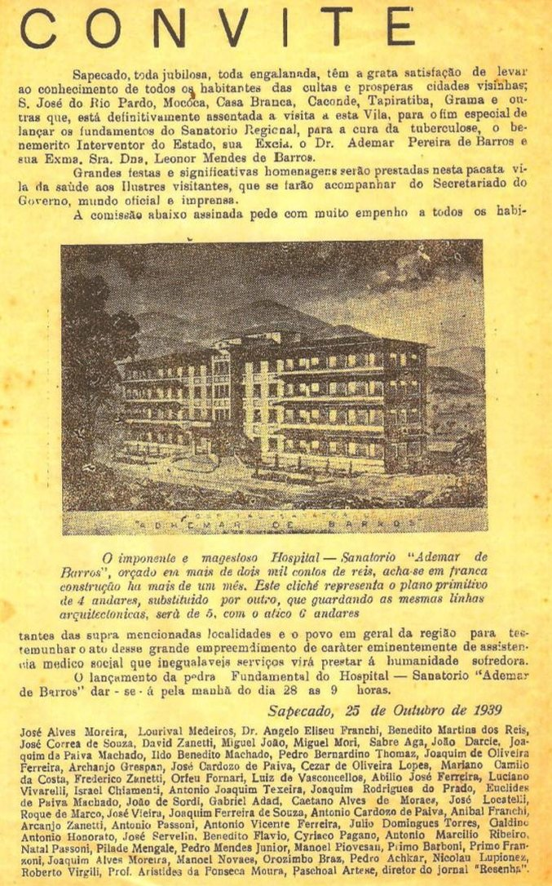
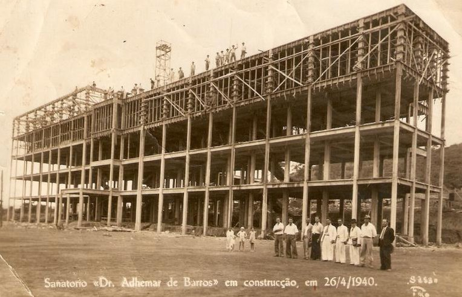
O prédio, porém, ficou pronto e fechado. Em janeiro de 1945, o jornal A Noite, de São Paulo, cobrava: o sanatório estava concluído havia quatro anos e não abria porque o abastecimento de água não fora resolvido a tempo. Um decreto de 1943 tinha desapropriado o terreno para captar a água1. O Hospital Sanatório Adhemar de Barros finalmente abriu em 1945; o mesmo artigo registra duas datas para a inauguração, 14 de agosto e 29 de setembro1.
De 1945 a 1977, o hospital atendeu somente tuberculosos, que vinham de todas as regiões do Estado atraídos pelo clima, que fez o lugar ser muitas vezes chamado de "a Suíça brasileira"1. Em 1946, uma subscrição popular promovida pelo Resenha comprou um ônibus para levar os doentes até o Sapecado, entregue numa cerimônia na rádio de São José do Rio Pardo1.
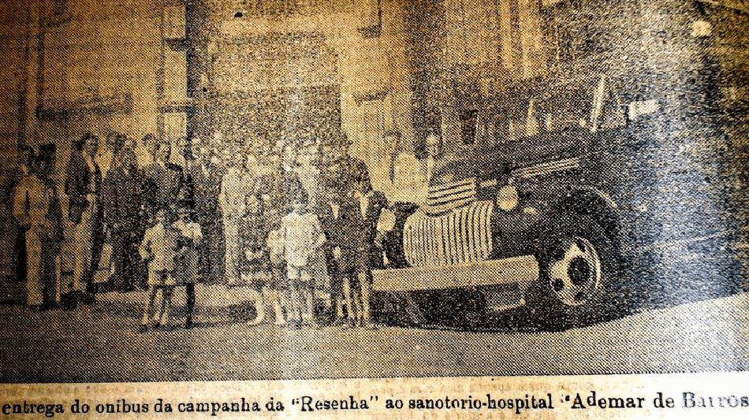
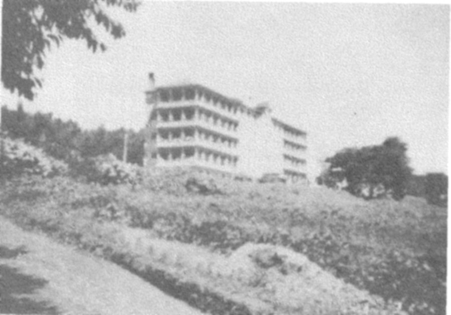
Os dirigentes do hospital criaram um departamento recreativo e outro de cultura, com uma biblioteca para os pacientes. Em 20 de julho de 1947 foi lançada a pedra fundamental de um pavilhão de cinema e biblioteca, o Cine-Teatro do Hospital Sanatório Adhemar de Barros, para o qual a benfeitora Sinhá Junqueira doou 200 mil cruzeiros; o hospital comprou uma máquina de projetar filmes para que os enfermos tivessem horas de lazer1. É a notícia de cinema mais antiga de Sapecado encontrada até aqui.
O sanatório tinha médicos, vindos da capital, mas não atendia a população da vila, a não ser por boa vontade. Nessa época, o único médico que morava em Sapecado era o próprio Ângelo Elyseu Franchi, conhecido como Dr. Jacó, que percorria o município a cavalo para chegar aos doentes. Cirurgias não podiam ser feitas ali; muitas mulheres davam à luz com parteiras, muitas morriam porque precisavam de cesariana, e outras eram levadas a São José do Rio Pardo para o parto1. O Dr. Jacó presidiu a caixa beneficente do hospital e, a partir de 1951, foi também seu diretor, até 19771.
Em 1977, o grande sanatório deixou de atender tuberculosos e foi desativado. Segundo a mesma autora, o governo do Estado pretendia fechá-lo de vez, e foi a insistência do prefeito Oswaldo Lopes que transformou o prédio em clínica geral1. Em dezembro de 1978 (o artigo dá também a data de 21 de dezembro de 1977), a antiga caixa beneficente virou a Associação Hospital Adhemar de Barros e passou a atender a população de Divinolândia como hospital geral. No mesmo ano, um convênio com o Estado levou para lá 150 pacientes com deficiência física e mental profunda, muitos deles abandonados pelas famílias; houve resistência no começo, mas a cidade acabou se envolvendo com eles em trabalho voluntário, festas e passeios na praça1.
Em 13 de julho de 1987, no governo do prefeito Aníbal Franchi Neto, o hospital passou ao CONDERG, o consórcio das prefeituras da região de São João da Boa Vista, e virou o Hospital Regional de Divinolândia, que hoje atende os dezesseis municípios do consórcio e abriga o Solar das Magnólias, a casa daqueles 150 moradores1. O livro de 1991 tem um capítulo sobre o Hospital Regional, e a sua resenha lembra o esforço para dotar a cidade de um hospital23.
Falta a voz dos doentes: quem foram, de onde vinham, quantos se curaram e quantos morreram no sanatório. Falta saber se o Cine-Teatro chegou a funcionar e que filmes passou, e se houve antes dele algum cinema na vila. As coleções do jornal Resenha e o arquivo do próprio hospital, de onde vêm quase todas as informações deste capítulo, podem guardar muito mais do que foi publicado.
Capítulo 9
Da capital da batata ao café de montanha
O café chegou ao Rio do Peixe ainda no tempo da escravidão: em 1855 já se dizia que as plantações aumentavam a cada ano, e em 1896 uma única fazenda da família Andrade tinha mais de quarenta mil pés1. Foi com imigrantes europeus, em sua maioria italianos, entre o fim do século XIX e o começo do XX, que a cafeicultura tomou corpo no lugar2. Mas a cultura que deu fama à cidade no século XX foi outra.
Segundo a Associação Brasileira da Batata, foram imigrantes espanhóis e italianos que trouxeram a batata para o município, na década de 1930. As terras eram cobertas de mata, derrubada a machado; a terra era preparada com enxadão e com arado puxado por boi ou burro. Divinolândia tornou-se um importante produtor de batata-semente, vendida para diversas regiões, e ficou conhecida como a capital da batata3. O livro de 1991 destaca a produtividade das famílias Cabrera e Quintana4.
Quando a associação escreveu sobre a cidade, cerca de setenta anos depois das primeiras roças, a batata ainda era a principal atividade econômica e a que mais empregava no município, plantada praticamente o ano inteiro por pequenos e médios produtores, sobretudo da cultivar Monalisa. Na mesma época, já predominava a batata para consumo3.
Os números mais antigos encontrados são de 1956, quando o IBGE descreveu o novo município: a principal atividade econômica era "a agricultura destacando-se a cultura da batata e do café", e os cinco principais produtos, pelo valor, foram o café (75 mil arrobas), a batata (mais de 12 milhões de quilos), o milho, o arroz e o feijão. Já então o café valia mais: 45 milhões de cruzeiros, contra 31,9 milhões da batata8.
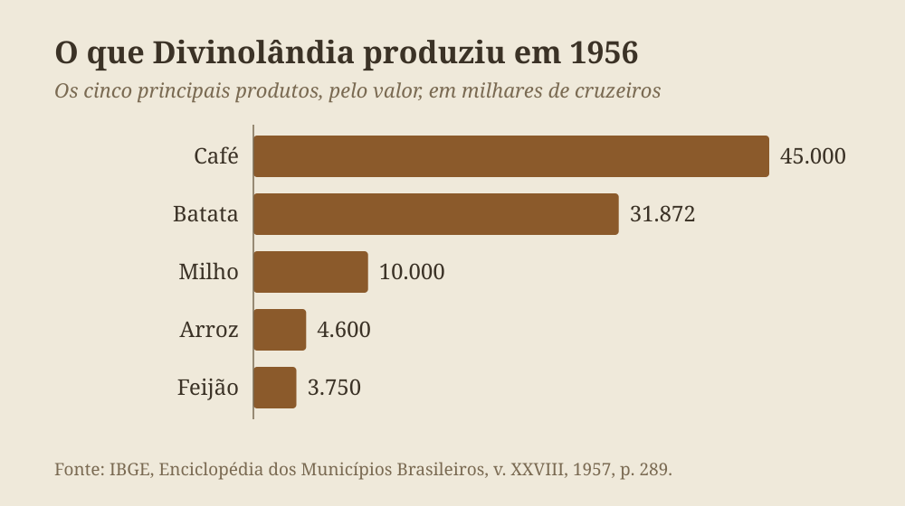
O café, por sua vez, passou a ser cultivado e vendido como café de montanha. Em 2015, uma reportagem registrou que a cidade produzia até 120 mil sacas por ano e que os produtores, organizados numa associação de cafeicultores de montanha, apostavam em café de qualidade2.
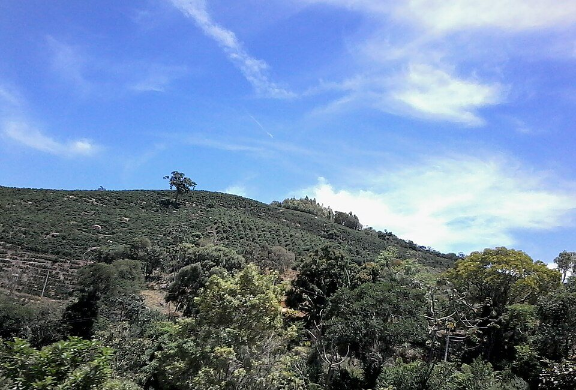
A Associação dos Cafeicultores de Montanha de Divinolândia, a Aprod, foi criada em 2005, tinha como parceiro o Sindicato Rural e, em 2015, 52 associados. Os cafezais ficam a uma altitude média de 1.300 metros, em pequenas propriedades familiares de cinco a dez hectares, com colheita manual que vai até agosto. A associação conseguiu certificação de comércio justo, criou um grupo de mulheres cafeicultoras em 2011, inaugurou um armazém em 2015 e promove um concurso de qualidade que chegou à décima edição naquele ano. O café do Sítio Gruta São Francisco, vencedor do concurso local, venceu também o concurso estadual de café de São Paulo de 20146.
Os números oficiais mais recentes mostram o peso de cada lavoura. Em 2025, segundo a Produção Agrícola Municipal do IBGE, Divinolândia colheu café arábica em 4 mil hectares, 7.677 toneladas, cerca de 128 mil sacas, no valor de 246 milhões de reais. A batata ocupou 800 hectares, com 30 mil toneladas, valendo 31 milhões. Ao lado delas, a serra produz repolho, cenoura e cebola em escala comercial: 13 mil, 9.600 e 9 mil toneladas5. A capital da batata é hoje, pelo valor do que colhe, uma terra de café.
Falta a história das famílias que plantaram as primeiras batatas, das cooperativas e do comércio de batata-semente, e de como cada lavoura andou entre 1956 e hoje. Os anuários agrícolas do Estado e as séries antigas do IBGE podem contar essa curva ano a ano.
Capítulo 10
A emancipação e os primeiros prefeitos
Durante mais de meio século, o Espírito Santo do Rio do Peixe foi um distrito de São José do Rio Pardo, para onde passou em 18981. Como distrito, conta o livro de 1991, produzia muito café, fumo, cereais e frutas, sobretudo uva, pêssego e maçã, e chegou a ser conhecido como "Terra do Marmelo"15. Em 1935, o jornal Resenha descrevia a vila como um "pacato vilarejo, que dorme esquecido e desprezado num recanto deste município", à espera de que os poderes públicos olhassem para ela2. O distrito tinha um subprefeito; em 1938, era Lourival Medeiros, que assinou com o médico Ângelo Franchi o pedido do sanatório a Getúlio Vargas2.
O nome oficial do distrito era o da freguesia, Espírito Santo do Rio do Peixe, mas o lugar era, como escreveu a Folha da Manhã, "mais conhecido por Sapecado"2. Em 1938, o Decreto estadual n.º 9.775 oficializou o nome do povo: o distrito passou a se chamar Sapecado; o IBGE dá para a mudança as datas de 30 de novembro e de 30 de dezembro daquele ano1. O livro sobre a cidade publicado em 2007 tem uma seção sobre um plebiscito para a mudança de nome em Sapecado e outra chamada "Saudades de Sapecado"3; o texto delas não está disponível, mas os títulos sugerem que a troca de nome foi discutida pelos moradores.
Em 30 de dezembro de 1953, a Lei estadual n.º 2.456 elevou o distrito a município, com o nome de Divinolândia, separado de São José do Rio Pardo14. O dia 30 de dezembro ficou como o aniversário da cidade5. O nome junta o Divino, o Divino Espírito Santo padroeiro da freguesia, ao final germânico -lândia, terra: Divinolândia é a terra do Divino8. O histórico do IBGE registra o desmembramento a partir de Caconde, embora o mesmo documento diga que o distrito passou para São José do Rio Pardo em 1898, pela Lei estadual n.º 558; a prefeitura, a Assembleia Legislativa e os jornais dos anos 1930 e 1940, que tratam Sapecado como distrito de São José, apontam São José do Rio Pardo1245.
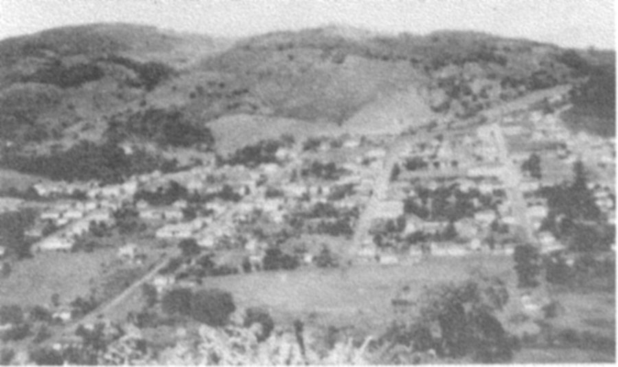
O primeiro prefeito foi Mário Mandoni, de 1955 a 1958, com a primeira Câmara Municipal6. Seguiram-se Alcindo Cardoso de Paiva (1959–1962); o padre Ladislau Rodrigues Pinto (1963–1966), cuja história está no capítulo seguinte; de novo Alcindo Cardoso de Paiva (1967–1970); Benedito Cândido de Faria (1971–1972); Aníbal Franchi Neto (1973–1976); Oswaldo Lopes (1977–1982); outra vez Aníbal Franchi Neto (1983–1988); e Luiz Pedro Gonçalves Silva (1989–1992)6. Há hoje na cidade ruas com os nomes de Mario Mandoni e de Lourival Medeiros10. Em 1959, o bairro do Campestrinho foi elevado a distrito do novo município1.
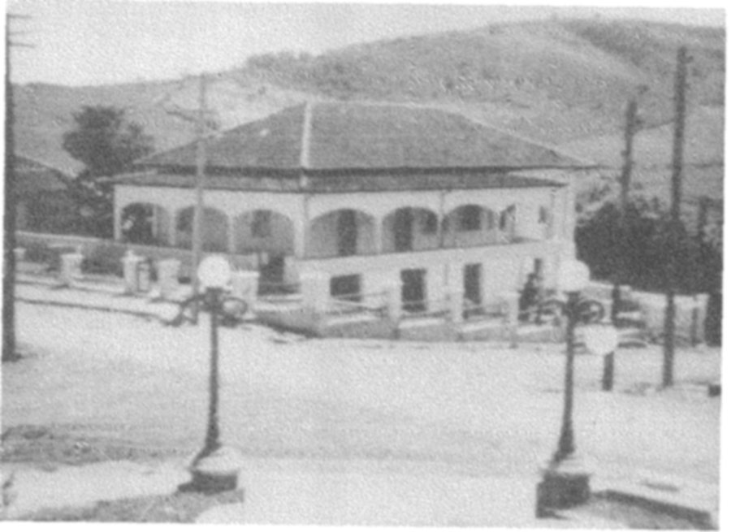
O censo de 1950 contara 6.797 habitantes no território, 78% deles na zona rural13. Pela série de população reproduzida na Wikipédia, com base no IBGE e na Fundação Seade, o novo município tinha 9.302 habitantes em 1958 e chegou a 12.363 no censo de 1970, o maior número da sua história; em 1980 eram 10.266, e desde então a população oscila em torno de onze a doze mil9.
O IBGE desenhou também o mapa do novo município, publicado em 1958, na escala de 1:100.000, com a divisão territorial do quinquênio 1954–1958. Nele aparecem a cidade, os povoados de Contendas, Laranjal e Campestrinho, as fazendas Boa Vista, Vila Bela e D. Ana, a Serra do Boqueirão na divisa com a Grama, o Rio Pardo ao norte e uma rede de córregos e ribeirões com os nomes que muitos bairros ainda usam: Três Barras, Contendas, Quilombo, Vargem Grande, Água Fria, Santo Antônio, Quebra-Machado, Campestrinho16.
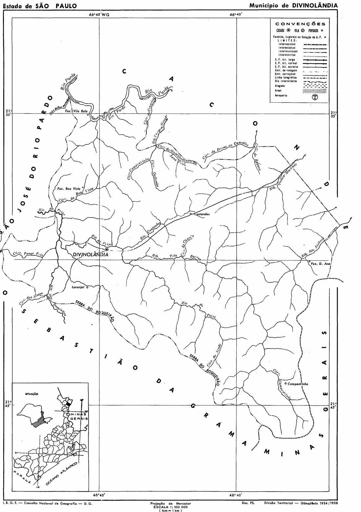
A cidade ganhou símbolos: bandeira, brasão e um hino, de letra e música de Nelson Biasoli, que lembra o Sapecado e a Serra da Mantiqueira7. O lema do brasão, em latim, é traduzido como "terra fértil de céu glorioso"9.
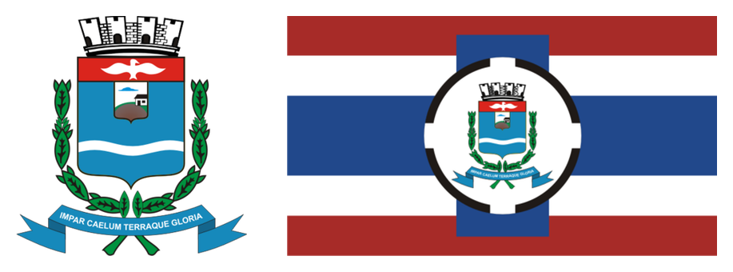
Em 16 de agosto de 1957, uma lei estadual autorizou o Estado a receber em doação dois terrenos na Rua do Asilo, um da prefeitura e outro da Diocese de Ribeirão Preto, somando pouco mais de cinco mil metros quadrados, para construir ali o prédio do Grupo Escolar "Euclides da Cunha"11. O nome homenageia o escritor que, na vizinha São José do Rio Pardo, escreveu Os Sertões12. O livro de 2007 tem uma seção sobre o acervo escolar de uma escola com o mesmo nome, a EMEIF Euclides da Cunha3.
Falta a história da campanha pela emancipação: quem a liderou, como votou o povo no plebiscito, quem defendeu e quem combateu o nome Divinolândia, assunto de um capítulo do livro de 1991 chamado "Por que Divinolândia?". Faltam a data da instalação do município e da primeira eleição, as realizações de cada prefeito, que o livro de 1991 relacionava, a lista dos prefeitos de 1993 a 2020 e a origem da bandeira e do brasão. O que se achou sobre a escola, da cadeira de 1865 ao ginásio criado em 1960, está no capítulo 6.
Capítulo 11
A fé do Divino Espírito Santo
A cidade nasceu de uma capela. A licença para erguer a capela do Divino Espírito Santo é de 1843, a freguesia é de 1865, e o padroeiro deu nome a tudo: à freguesia, ao distrito e, por fim, ao município, Divinolândia, a terra do Divino12. Por volta de 1950, a paróquia tinha a matriz e quinze capelas espalhadas pela vila e pelos bairros rurais3. A igreja que se vê hoje na praça, porém, é bem mais nova. O livro de 1991 abre a descrição da cidade com uma imagem que o prefácio destaca: o casario "em forma de pomba", a ave que representa o Espírito Santo15.
Tudo indica que a capela de 1843 ficava onde está a matriz de hoje. Na tese de doutorado em que estudou as capelas da região, Rafael Augusto Silva Ferreira redesenhou, com coordenadas, o traçado da vila em 1905, a partir da folha topográfica daquele ano, de um mapa de Divinolândia de 1940 e de um relatório de bens que ele cita. A vila era então, nas palavras dele, "um incipiente arraial em torno do único largo, da igreja matriz", e o largo ficava "à meia encosta, no centro da forquilha formada pela hidrografia", junto ao córrego que os documentos chamam de Caçonunga; o ponto mais alto ficou para o cemitério11. Posto sobre o mapa atual, o ponto que ele marca como capela e adro fica a cerca de sessenta metros da matriz de hoje1112. O mapa mostra a igreja de 1905; que ela ocupasse o lugar da capela de 1843 é a leitura do autor, que chama o ponto de "capela e adro" e lembra que o patrimônio foi doado quando já havia ali um arraial11.
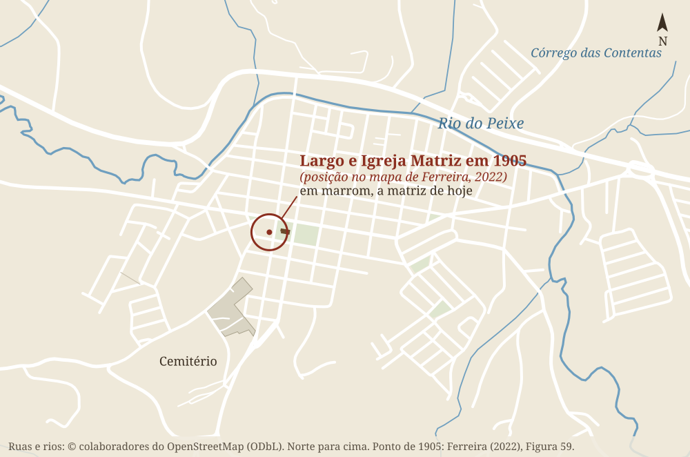
A folha topográfica original, a "Folha de Casa Branca" da Comissão Geográfica e Geológica do Estado, na edição preliminar de 1905, confirma a posição: ela mostra o "Esp. S.to do R. do Peixe" como uma pequena grade de ruas a cerca de mil metros de altitude, a oeste da barra do Ribeirão das Contendas no Rio do Peixe13. Hoje a matriz fica a pouco mais de um quilômetro a oeste dessa mesma barra, a do Córrego das Contentas12. A mesma tese reproduz uma vista da vila em 1929, do Almanaque de São José do Rio Pardo e Grama, e uma fotografia aérea de 1939, ambas com a igreja matriz marcada por uma seta11.
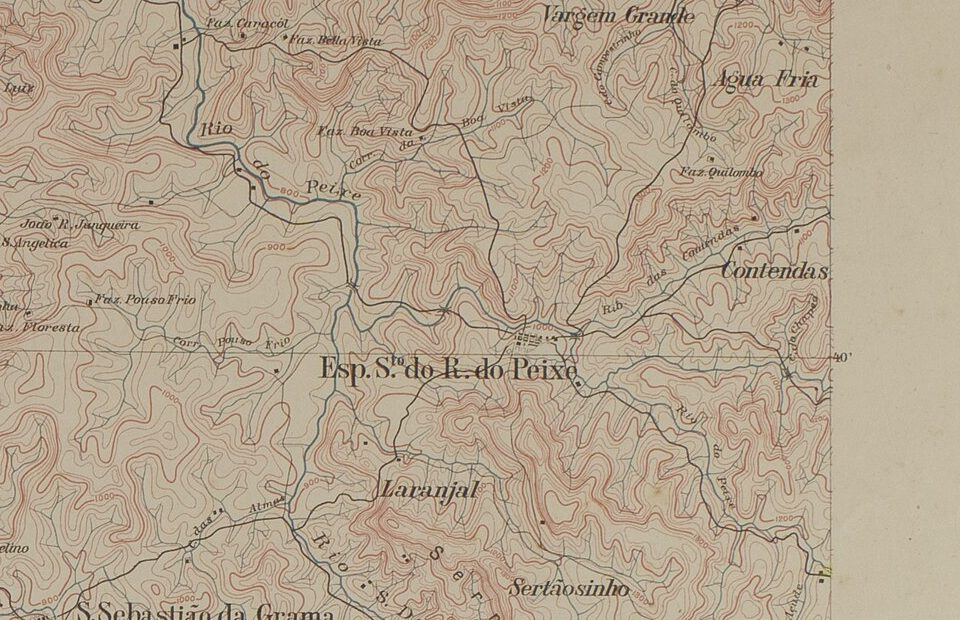
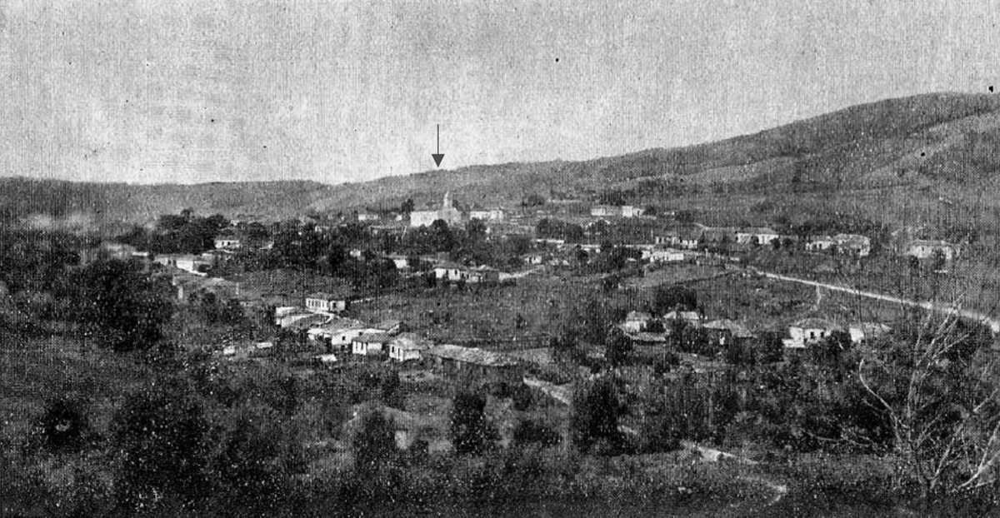
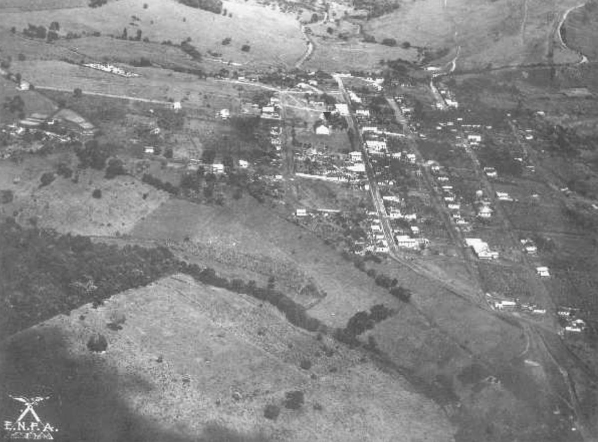
O que nenhuma fonte encontrada diz é se o prédio era sempre o mesmo. Em março de 1844, o vigário de Caconde dava a capela-mor por pronta e o corpo da igreja por fazer; o livro de 1991 diz que a capela foi benta em setembro de 18441115. O mesmo livro, apoiado num registro de batizado de 1844, diz que a capela "erguia-se à margem do Rio do Peixe" e deduz, pelo pequeno número de moradores e pelo tamanho das fazendas, que ela ficava "nos recônditos da fazenda"; a provisão de 1843, porém, mandava erguê-la "em lugar alto, livre de umidades", e o mapa de 1905 já põe a igreja no largo da vila1511. E a historiadora que conta a construção da matriz inaugurada em 1961, "que até hoje se ergue na praça de mesmo nome", não diz o que havia antes no lugar nem o que foi feito da igreja anterior2.
Dessa igreja anterior, a única imagem encontrada é uma fotografia que o IBGE publicou em 1957, na Enciclopédia dos Municípios Brasileiros, com a legenda "Igreja Matriz": um prédio comprido e baixo, de paredes claras e janelas em arco, com uma torre de relógio numa das pontas. Como a obra saiu um ano antes de o padre Ladislau chegar, a foto mostra a matriz que existia antes da de 1961; em que ano foi tirada, a publicação não diz14.
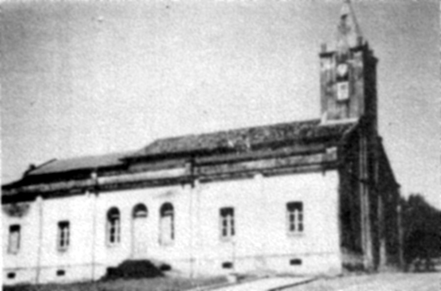
O padre Ladislau Rodrigues Pinto nasceu no Ceará e deixou a terra natal ainda menino. Segundo a historiadora Orlanda Maria Grespan de Faria, a mãe tinha feito uma promessa: o filho seria padre e ergueria uma igreja. Ele chegou a Divinolândia em 1958, nomeado pároco, e logo ganhou a estima da cidade, com uma palavra e um aperto de mão para cada um na rua2.
A construção da igreja matriz enfrentava um problema: o povo já não confiava em quem administrava as doações, por causa de líderes anteriores. Mesmo assim, o padre Ladislau assumiu a campanha. Percorria as fazendas a cavalo pedindo ajuda aos agricultores, promovia quermesses e leilões e, conta-se, carregava ele mesmo o material da obra ao lado dos trabalhadores2.
A igreja matriz foi inaugurada em 25 de dezembro de 1961. Dois meses depois, em fevereiro de 1962, o padre Ladislau deixou a paróquia e abandonou a batina: a promessa da mãe estava cumprida2. Em 19 de maio voltou à cidade e candidatou-se a prefeito nas eleições de outubro. Venceu Nelson Faustino por nove votos, levou junto o vice, Mario Prado Mendes, e a maioria da Câmara, cinco vereadores contra quatro. Choveu forte, e a cidade festejou na rua como num carnaval24.
Segundo a resenha do livro de 1991, ele se elegeu "sob a censura de parte dos fiéis e dos párocos que o sucederam"; a historiadora conta que os sacerdotes, antigos colegas dele, lamentavam a "perdição" do ex-vigário24. Ele governou a cidade de 1963 a 1966 e, afastado do clero, trabalhou como advogado e como professor de Português e Literatura até o fim da vida2. A historiadora o chama do mais combatido de todos os padres da cidade, talvez por ter sido o que mais realizou2; no livro de 1991, o capítulo dedicado a ele se chama "Padre Ladislau: uma ovelha desgarrada"6. Hoje uma praça do centro leva o nome de Professor Ladislau Rodrigues Pinto10.
Décadas depois, o tempo corroía a estrutura da matriz, e a torre corria o risco de desabar. O padre José João Minussi, nascido em São José do Rio Pardo em 1948, pároco de Divinolândia de 1983 a 1987 e de novo a partir de 1990, conduziu a reforma com campanhas entre os fiéis, num tempo de dinheiro curto no município agrícola. Com a comunidade, ergueu também as igrejas de São Sebastião, Santos Reis, Santa Luzia e Santo Antônio e o Santuário da Mãe Rainha, na cidade, e capelas nos bairros Água Fria e Pirapitinga, e preparou a paróquia do Campestrinho5.
O livro de 1991 dedicava capítulos ao cristianismo e ao evangelismo, à Congregação Cristã no Brasil, à Assembleia de Deus e ao espiritismo na cidade6; a Congregação Cristã está presente também no distrito do Campestrinho7. Hoje o município tem duas paróquias católicas, a do Divino Espírito Santo, na matriz, e a de Nossa Senhora Aparecida, no Campestrinho, que atende também os bairros Três Barras, Campo Redondo e Ribeirão do Santo Antônio, e igrejas da Assembleia de Deus Ministério do Belém e da Congregação Cristã no Brasil8. Entre os templos que atraem visitantes estão a capela do Pontal e a Igreja Ecológica de São Francisco9. E há uma devoção que a pesquisadora do quilombo do Careca liga aos negros que viviam no Pontal: a missa de Santa Cruz rezada todo 3 de maio na capela do Morro do Pontal, contada no capítulo 1.
Falta a história da festa do padroeiro, o Divino Espírito Santo, que dá nome à cidade e de que nenhuma fonte aberta fala. Falta saber se a matriz que existia antes de 1961 era a capela de 1843, reformada ou reconstruída no mesmo largo, e o que aconteceu com ela quando a nova foi erguida. Falta a história de quando chegaram e como cresceram as igrejas evangélicas e o centro espírita da cidade, que o livro de 1991 contava, a lista dos padres desde a criação da freguesia e os registros do Livro Tombo da paróquia, que guarda a crônica oficial da igreja.
Capítulo 12
Campestrinho, Três Barras, Pontal e os nomes da serra
Vários bairros rurais de Divinolândia guardam nomes de antigas fazendas e de córregos. O livro de 1991 tinha capítulos sobre os bairros Três Barras, Campestrinho e Ribeirão do Santo Antônio, e um intrigante "Por que bairro Quebra-Machado?"1. O que segue é o que se conseguiu juntar sobre eles.
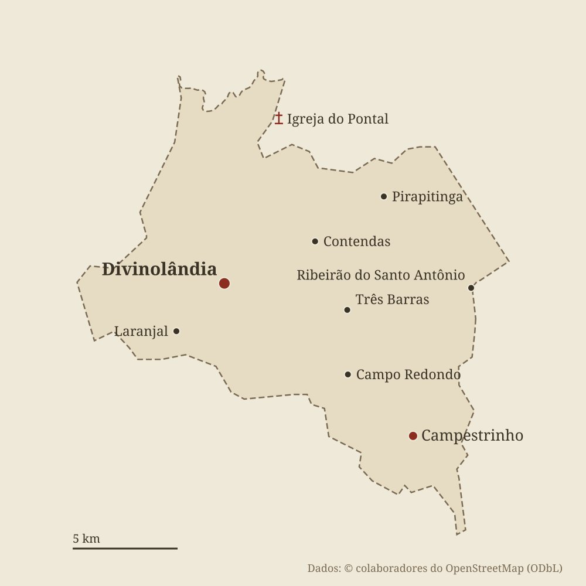
O Campestrinho é o único distrito do município além da sede. Foi criado pela Lei estadual n.º 5.285, de 18 de fevereiro de 1959, cinco anos depois da emancipação, com sede no povoado de mesmo nome, e fica no caminho rural entre Divinolândia e Poços de Caldas23. Teve cartório próprio até 1971, quando os registros passaram para a sede. No censo de 2010 tinha 1.754 habitantes, dos quais cerca de 1.100 no povoado3. Tem igreja católica, que o padre José João Minussi preparou para ser paróquia, e uma congregação evangélica34.
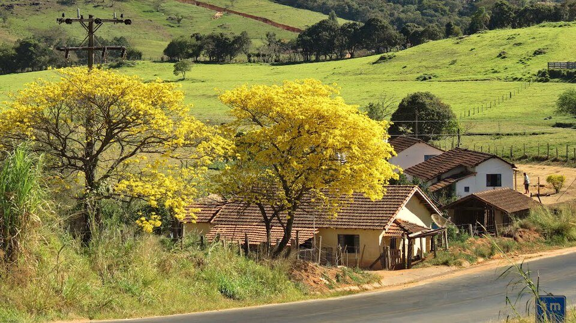
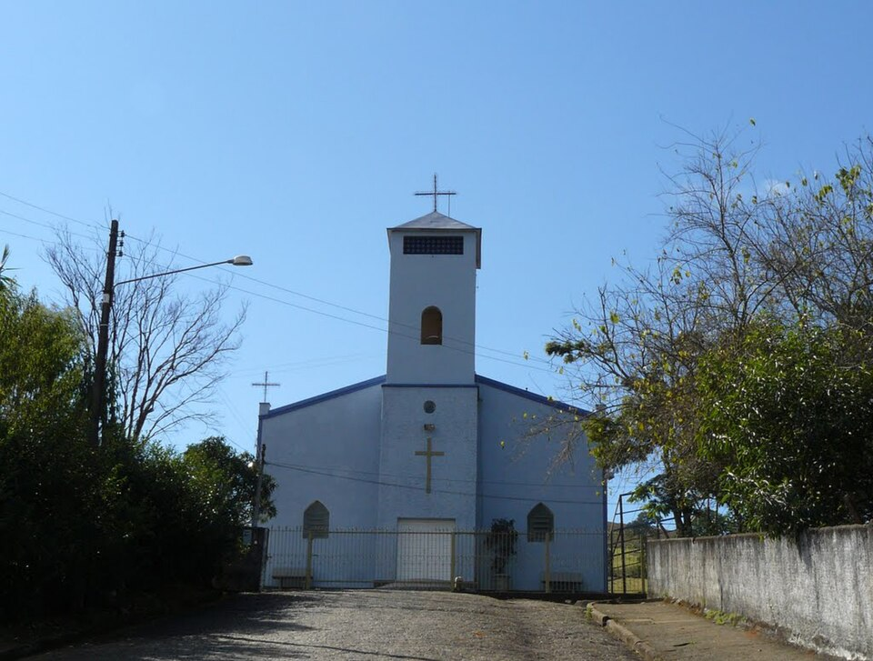
Três Barras é um dos nomes mais antigos registrados no lugar. A fazenda Três Barras foi comprada em 1821 pelo capitão Vicente Ferreira Pinto, um dos fazendeiros mais ricos do lugar, e em 1856 aparece no registro paroquial de terras em nome de Manoel Ferreira Pinto56. No mesmo registro aparecem outras fazendas da área, como Monte Alegre, Boa Vista, Cubatão, Limoeiro e Jaboticabal6.
Na divisa com Caconde fica o Morro do Pontal, onde há um bairro e um córrego chamados Quilombo e uma capela com cruzeiro mantida pela prefeitura. É essa a área que a pesquisadora do quilombo do Careca, destruído em 1759, aponta como possível local dele, e é ali que se reza, todo 3 de maio, a missa de Santa Cruz7. Na versão revista da pesquisa, de 2019, a capela e a festa aparecem no bairro rural de Vargem Grande, vizinho do Quilombo, "no extremo do vale"12.
Nenhum documento diz quem fez a capela. Em todas as entrevistas da pesquisadora, os moradores atribuíram a sua origem aos negros, disseram que ela é anterior aos imigrantes e que antes deles a região era "mata fechada"; um morador idoso, que ia à festa desde os sete ou oito anos, calculava que a igrejinha tinha "uns 120 anos, por aí ou muito mais", e contava que o pai dele, que morreu com 80, também não sabia quem a tinha feito. Na década de 1990, um casal da vizinhança achou a capela "caindo os telhado, tudo descascado" e a reformou com um pedreiro vizinho; "aí começou o povo olhar de novo". O mesmo casal lembra de um fogo que chegou "até pertinho dela" e parou, o que a comunidade atribui à providência de Deus12.
A festa também mudou. Antes havia missa, leilão de assado, prendas e "boteco de bebida"; hoje reza-se o terço, o padre diz a missa, e depois o povo come e bebe um pouco e vai embora. O pesquisador José Armando, de Caconde, observa que a Igreja deixou há décadas de celebrar a Santa Cruz em 3 de maio, mas a comunidade manteve a data. A festa ficou conhecida na região e passou a atrair visitantes o ano todo; quando a pesquisa foi feita, o projeto de lei que pedia para Divinolândia o título de Município de Interesse Turístico começava pela descrição do Pontal12.
O município fica na Serra da Mantiqueira, de relevo acidentado10. O ponto mais alto, o Morro do Canelá, no bairro Campo Redondo, tem 1.490 metros de altitude segundo a prefeitura, ou 1.493 segundo o guia de turismo do Estado, e é procurado por ciclistas de montanha89. Dos mirantes, o mais famoso é o Morro da Torre, a 1.380 metros10, e o Morro do Pontal, a 1.240 metros segundo o guia do Estado (cerca de 1.277, segundo a pesquisa sobre o quilombo), tem vista para o Rio Pardo7. Nas encostas há cachoeiras como a Marcílio Grespan, de 45 metros, a do Santo, com mais de 20, a Mário Valente e a Quingo Forlani, com piscinas naturais9. Em 2019 foi criado um circuito de cicloturismo, o Serras e Capelas, com quatro rotas9.
Além do distrito, o município tem um povoado, o Ribeirão do Santo Antônio, que com os bairros Três Barras e Campo Redondo é atendido pela paróquia do Campestrinho10. Nos bairros Água Fria e Pirapitinga foram erguidas capelas nas últimas décadas4.
Vários nomes de bairros são antigos. Uma carta da Commissão Geographica e Geologica publicada em 1923 já registra, em volta do Espírito Santo do Rio do Peixe, o Laranjal, as Contendas, a Vargem Grande (grafada "Varjem"), a Água Fria e o Sertãozinho ("Sertãosinho"), além da Serra do Boqueirão16. E o mapa municipal que o IBGE publicou em 1958 dá nomes de córregos e ribeirões a muitos deles: Três Barras, Contendas, Quilombo, Vargem Grande, Água Fria, Santo Antônio, Campestrinho e um Ribeirão Quebra-Machado, no nordeste do município17.
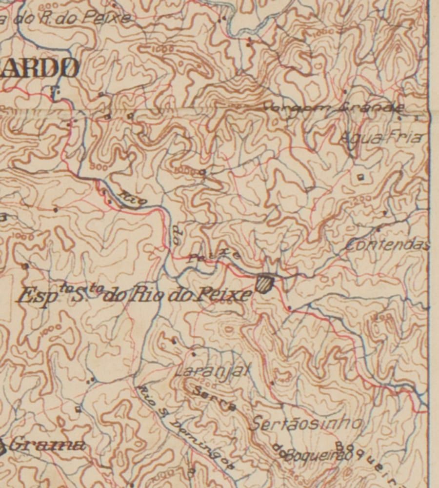
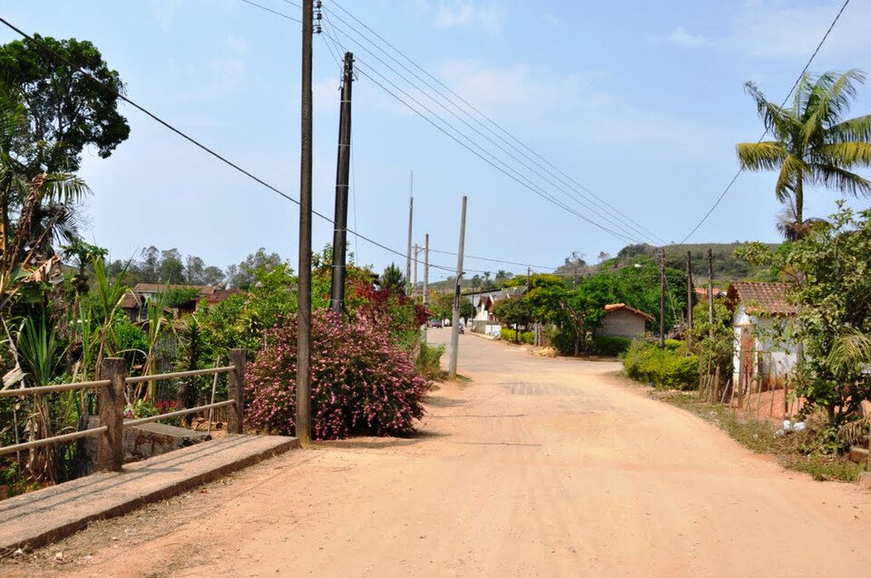
Falta saber por que um bairro e um ribeirão se chamam Quebra-Machado, como nasceram o Ribeirão do Santo Antônio e os demais bairros, quem foram as primeiras famílias de cada um e quando o Campestrinho começou a se formar. O livro de 1991 respondia a algumas dessas perguntas; a memória dos moradores dos bairros pode responder às outras.
Capítulo 13
A cidade que a história deixou
No censo de 2022, Divinolândia tinha 11.158 habitantes1, três vezes e meia a população que a freguesia do Rio do Peixe tinha em 18722. É uma cidade pequena da Serra da Mantiqueira, na divisa com Minas, onde o pouso de tropeiros virou vila, a capela virou matriz e o nome do rancho queimado virou, por quinze anos, o nome oficial do lugar3.
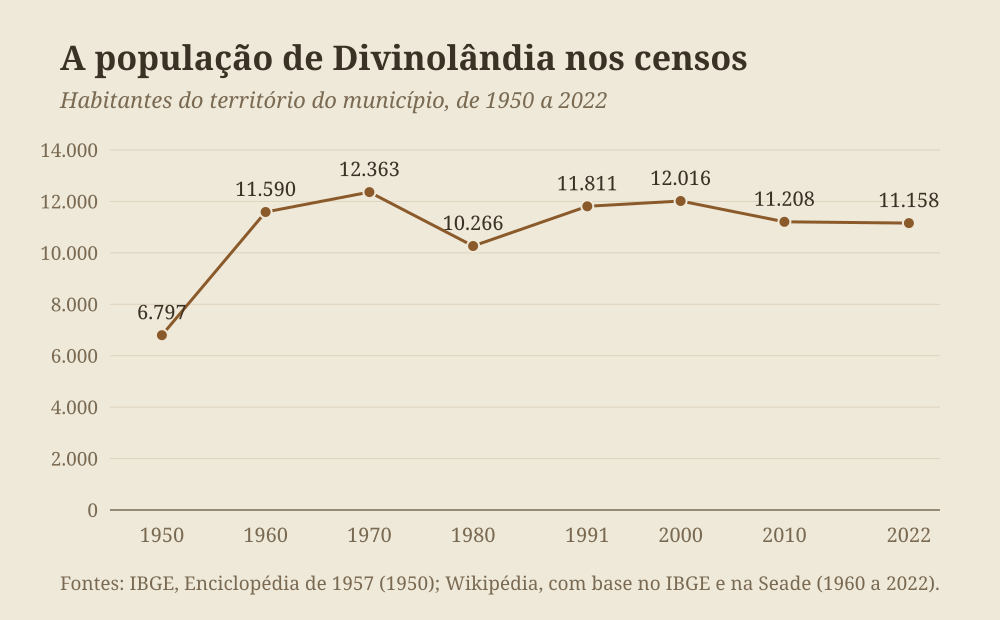
A sede fica a 1.055 metros de altitude: segundo o Instituto de Geociências da USP, é a quarta cidade mais alta do Estado de São Paulo11. O clima é tropical de altitude, com verões mornos, invernos frescos e geada todos os anos, sobretudo na zona rural. O município faz divisa com São José do Rio Pardo, Caconde, São Sebastião da Grama e, do lado mineiro, Poços de Caldas, e fica a cerca de 285 quilômetros da capital12. O território tem 223,7 quilômetros quadrados14.
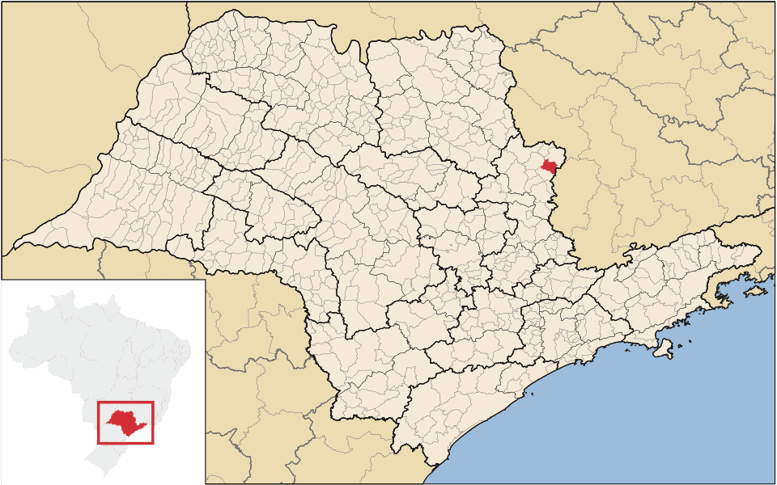
Quem o atravessa é o Rio do Peixe, que deu nome à freguesia. Ele nasce na Serra da Fumaça, entre Divinolândia e Poços de Caldas, corre por cerca de 48 quilômetros, com o maior trecho dentro do município no Campestrinho, cruza o município junto à rodovia SP-344 e deságua pela margem sul no Rio Pardo, já em São José do Rio Pardo15.
Em 1991, o livro de Válter Roberto Lopes e Orlanda Maria Grespan de Faria descrevia assim a paisagem. A cidade se espalha "nas faldas da belíssima e eminente Serra de Caldas, ao longo do vale do Rio do Peixe", a 1.100 metros de altitude, segundo os autores. Pelas encostas ainda se viam, paralelas, as linhas dos sulcos dos velhos cafezais, "já meio apagadas pelo tempo". As matas que restaram ficavam nas encostas e no alto dos morros e eram reserva florestal obrigatória, vigiada pela Polícia Florestal; havia muitos eucaliptais para os agricultores e o comércio de madeira. À beira dos caminhos e nas serras ficavam velhos pinheiros, "últimos remanescentes dos pinheirais de outrora", e mangueiras centenárias. Nas matas cresciam jequitibás, cedros, jacarandás e cabriúvas, e os autores conheciam dois jequitibás com quase três metros de diâmetro, aos quais atribuíam cerca de dois mil anos. Entre as aves, citavam a gralha, o jacu, o pintassilgo, o canário, o corrupião e a saracura22.
Segundo dados do IBGE reproduzidos pelo portal RuaCEP, o índice de desenvolvimento humano municipal de Divinolândia foi de 0,734 em 2010, na faixa considerada alta16, e o produto interno bruto por habitante chegou a cerca de 47 mil reais em 202314.
A economia continua na terra. Em 2025, o café arábica das encostas valeu 246 milhões de reais, e a batata, que deu à cidade o apelido de capital da batata, 31 milhões, ao lado de repolho, cenoura e cebola4. No café predominam as pequenas propriedades familiares20, e a batata, segundo a associação dos produtores, é plantada praticamente o ano inteiro por pequenos e médios produtores, numa lavoura trazida pelos imigrantes na década de 193056.
O prédio que nasceu como sanatório de tuberculosos é hoje o Hospital Regional de Divinolândia, administrado pelo consórcio de dezesseis municípios da região de São João da Boa Vista. Atende especialidades como oftalmologia, ortopedia, otorrinolaringologia e dermatologia, abriga os moradores do Solar das Magnólias e, segundo o artigo de Orlanda Maria Grespan de Faria, escrito por volta de 2011, foi apontado como o sétimo melhor hospital público do Estado numa pesquisa de satisfação dos usuários do SUS feita pela Secretaria da Saúde7.
Outra instituição de assistência da cidade é o Lar da Criança de Divinolândia. Começou em 19 de janeiro de 1980 como uma creche para dezesseis crianças no porão da igreja, criada por duas religiosas e um padre; em 1982 a prefeitura cedeu o prédio onde funciona até hoje, em péssimo estado, e depois das reformas, parte delas concluída em 1985, passou a atender cerca de sessenta crianças17.
Desde 2021, a prefeitura é dirigida por Antônio de Pádua Aquisti, o Padoca, que antes fora vereador e vice-prefeito18. Em outubro de 2024 ele foi reeleito com 2.959 votos, 40,7% dos votos válidos, contra 2.376 de João Vivarelli e 1.933 de Paulo Aurelietti19.
Em fevereiro de 2019, Divinolândia recebeu do Estado o título de Município de Interesse Turístico; o guia de turismo do Estado destaca os mirantes, as cachoeiras, o circuito de cicloturismo e o pão de queijo doce13. A cidade está também no Caminho da Fé, a rota de peregrinação que vai até Aparecida. No ramal que sai de Caconde, a etapa que parte de Divinolândia é a mais longa e a mais alta, com 35 quilômetros e um ponto a 1.420 metros de altitude8. E há o pão de queijo doce, inventado, segundo a família, por um padeiro filho de italiano para atender os viajantes de Minas que pediam pão de queijo9.
Nenhum escritor ou artista conhecido que tenha escrito sobre Divinolândia apareceu nas buscas feitas para este livro. Mas o lugar aparece nas cartas de dois governadores do século XVIII, no tempo do ouro e dos quilombos, e no relato de um voluntário de 1932. Seguem as frases inteiras, com a grafia das edições em que foram publicadas.
Luiz Diogo Lobo da Silva, governador de Minas Gerais, ao governador de São Paulo, em 1765, sobre o Campo Grande, o sertão onde estava o quilombo do Careca: "Tendo o Illmo. e Exmo. Snr. Conde de Bobadella pelas suas acertadas determinações a expensas destas quatro Commarcas, e riscos dos seus habitadores evacuado dos Negros quilombados, que infestavão com avultadas correrias, roubos, mortes, e outros insultos toda a extemçam do Campo grande, Novos Descubertos de S. Pedro de Jacuhy, Dezemboque, e Ouro fino, que em virtude da Ordem Regia de nove de Mayo de 1748 tocavam a Capitania de Minas Geraes como se evidenceya na Liberdade, que S. Magestade F. lhe concedeo de a demarcar com essa, que V. Ex. está regendo pelos Limites, que a sua experiencia, e pratica dos Reaes interesses lhe manifestasse ser de mayor utilidade ao Real serviço, o que fez executar pela carta, que dirigio em 27 de Mayo de 1749 ao Ouvidor da Comarca do Rio das Mortes Thomaz Ruby de Barros Barreto, o qual em observancia da referida ordem, e dita carta effeytuou em 24 de Setembro de 1750 na forma, que faz manifesto o auto da demarcaçam, termo de posse, e a que pela sua parte tomou a Camera do Rio das Mortes, e no Espiritual o Reverendo Bispo, que foy desta Dioceze, sem contradiçam dos moradores dessa Capitania, tendo sido notificados nas suas Cameras pelo expressado Ministro para se acharem por seus procuradores, ou pessoalmente, quando lhes parecesse, no refferido acto, alem da circunstancia, que occorre de que ainda convocandose antecedentemente com repetiçam para baterem as correrias dos Quilombos, e se livrarem da oppressam, que exerciam no territorio dessa Capitania, as quizeram antes padecer correndo o risco de os deyxar chegar a estado de se verem opprimidos, e sentirem mayores consequencias a não tomar esta de Minas o pezo, risco, e dispeza de debellar, e destruir os ditos Quilombos."23
D. Luiz Antonio de Souza, o Morgado de Mateus, governador de São Paulo, ao vice-rei, o Conde da Cunha, em 26 de março de 1767, sobre o ouro do Rio Pardo: "Já dei conta a V. Exa. em differentes cartas q'. Sua Magestade que Deos Guarde quando foi servido nomear-me para este Governo, me mandou instruir de que devia oppor-me inflexivelmente a todos os novos descubertos de ouro que se intentassem fazer para estas partes, e logo que cheguei a esta Capitania succedeo aparecer o do Rio pardo, que deo principio a questão de Demarcações entre esta Capitania, e a de Minas, que está pendente da rezolução de V. Ex." E, na mesma carta, sobre os soldados que ele mantinha lá: "Eu estimaria que o dito Snr. Governador tomase a si impedir aos seus subditos o continuarem nestes intentos, para eu poder retirar o meu destacamento, porque me dá imcomodo conserva-lo naquelle citio dezerto, e me he muito necessario para o serviço da Praça."24
O mesmo governador, ao novo vice-rei, o Conde de Azambuja, no fim de 1767, sobre os sertões disputados com Minas: "Pela parte do Governo de Minas se acha uzurpado todo o certão que deve tocar a esta Capitania com todos os seus descubertos, em que não só fica defraudado o Real Erário com os quintos que delles deve perceber por se confundirem todas com a cota das cem arrobas, que se obrigarão a pagar os Povos de Minas annualmente, mas estão estes vassallos Paulistas, que forão os descubridores de todas as riquezas, espoliados totalmente dellas e sem nenhum proveito dos trabalhos de seus Avôs: Além disto vive-se naquellas terras sem a devida administração de justiça, porque longe do Governo das Geraes, e izentos desta jurisdição tem feito hum Quilombo de criminozos para onde todos se retirão."24
Hermann Moraes Barros, voluntário do batalhão de Romão Gomes, em relato publicado em 1984, sobre a missão dada a Herbert Levy em 1932: "Recebeu ele a incumbência de restabelecer a situação das áreas de São José do Rio Pardo, Grama, Sapecado, Caconde, Itaiquara, Vargem Grande e mais algumas estações abandonadas ao inimigo sem combate."25
Grande parte das fontes deste livro vem de uma pessoa: a professora Orlanda Maria Grespan de Faria, a Dona Landinha, autora dos livros de 1991 e de 2007 e de vários artigos usados neste livro, homenageada pelo Rotary Club de Divinolândia em 202410. Muito do que ela juntou ainda não está ao alcance de quem procura na internet, e os capítulos deste livro mostram, um por um, o quanto falta: os nomes das pessoas escravizadas, os colonos das fazendas, os combatentes de 1932, o primeiro cinema, a campanha da emancipação.
Este livro termina aqui por enquanto, mas continua aberto. Cada fotografia guardada numa gaveta, cada documento de família e cada história contada pelos mais velhos pode virar uma página nova.